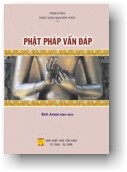

BuddhaSasana
Home Page
This document is written in Vietnamese, with Unicode
Times font
|  |
THERAVĀDA PHẬT PHÁP VẤN ĐÁP Bình Anson biên dịch NHÀ XUẤT BẢN TÔN GIÁO |
PHỤ ĐÍNH -1- Cuộc đời Ðức Phật Bình Anson * Ngày rằm tháng tư âm lịch mỗi năm là một ngày đặc biệt cho tất cả các Phật tử trên toàn thế giới. Theo truyền thống Theravāda (Nam tông), đó là ngày lễ Tam Hợp Vesak (Vesakha) kỷ niệm ngày sinh (Phật đản), ngày chứng đắc (Thành đạo), và ngày tịch diệt (Bát Niết bàn) của Ðức Phật. Trong khi đó, một số quốc gia theo truyền thống Mahāyana (Bắc tông) cử hành ba dịp trọng đại trên vào ba ngày khác nhau trong năm. Tuy nhiên, ngày rằm tháng tư được xem như là ngày lễ Phật giáo quan trọng nhất, và đã được các tông phái Phật giáo chấp nhận, trong kỳ Ðại hội Phật giáo Thế giới lần thứ VI, năm 1961. Ngoài ra, vào ngày 15 tháng 12 năm 1999, Hội đồng Liên hiệp quốc đã biểu quyết công nhận ngày Vesak là một trong những ngày lễ chính thức hằng năm của tổ chức quốc tế này. Ðến nay, nhiều sử liệu ghi rằng Ðức Phật sinh ra trong đêm trăng rằm tháng tư âm lịch năm 623 trước Tây lịch (TL), tại vườn Lumbini (Lâm-tỳ-ni), ngoại ô thành Kapilavatthu (Ca-tỳ-la-vệ), ngày nay thuộc xứ Nepal, phía bắc Ấn Ðộ. Thân phụ Ngài là vua Suddhodana (Tịnh phạn) và thân mẫu là hoàng hậu Mahā Maya (Ðại tịnh diệu). Ngài thuộc sắc tộc Sakya (Thích-ca), có họ Gotama (Cồ-đàm), và được vua cha đặt tên là Siddhatta (Sĩ-đạt-ta), có nghĩa là Như ý. Năm 16 tuổi, Ngài lập gia đình với công chúa Yasodhara (Gia-du-đà-la) và có một người con trai, tên là Rahula (La-hầu-la). Năm 29 tuổi, Ngài rời bỏ cung vàng, vượt sông Anoma (một chi nhánh của thượng lưu sông Gange Hằng hà), tầm sư học đạo, sống cuộc đời du sĩ. Sau 6 năm học hỏi với nhiều bậc đạo sư nổi tiếng thời đó với nhiều pháp môn tu tập khác nhau, Ngài cảm thấy vẫn còn nhiều vướng mắc, và không tìm ra được con đường giải thoát tối hậu. Cuối cùng, Ngài quyết định không sống lệ thuộc vào một vị đạo sư, một pháp môn nào cả. Từ bỏ lối tu khổ hạnh hành xác, Ngài bắt đầu đi khất thực trở lại để phục hồi sức khỏe, và tham thiền dưới cội cây Assatha, sau này được gọi là cây bồ đề (bodhi), trong vùng Gaya ngày nay được gọi là Bodhgaya (Bồ-đề đạo tràng), bên bờ sông Neranjara (Ni-liên-thuyền). Ngài lập tâm nhất quyết nỗ lực bất thối chuyển: "Dù chỉ còn da, gân và xương, máu và thịt đã cạn khô và tan biến, ta nguyện không xê dịch chỗ này cho đến khi chứng ngộ toàn giác". Vào đêm rằm tháng tư năm 588 trước TL, Ngài nhập định tham thiền, quán niệm hơi thở và định tâm, an trú vào bốn tầng thiền-na (jhana), rồi hướng tâm hồi tưởng các tiền kiếp. Vào cuối canh một đêm đó, Ngài chứng đạt trí tuệ "túc mạng minh". Sau đó, Ngài hướng tâm quán triệt nguyên do đưa đến sự sinh tử của mọi loài, về luật nghiệp quả, và vào cuối canh hai, Ngài chứng đạt "thiên nhãn minh". Sau đó, Ngài quán triệt sự chấm dứt các lậu hoặc, quán triệt Khổ, Khổ tập, Khổ diệt, và Con đường diệt khổ (Tứ Diệu Đế), và chứng đạt "lậu tận minh". Lậu đã tận diệt, tuệ đã toàn khai, Ngài quán triệt chân lý và giác ngộ, trở thành một vị Chánh đẳng Chánh giác, và được xem như là đã chứng Niết bàn hữu dư y, nghĩa là trạng thái tâm trí hoàn toàn giải thoát nhưng thân xác vẫn còn tồn tại. Lúc đó Ngài được 35 tuổi. Bài giảng đầu tiên của Ngài là bài kinh Chuyển Pháp luân, giảng cho năm anh em Kondañña (Kiều-trần-như), đệ tử đầu tiên, tại vườn Lộc uyển gần thành Benares (Ba-na-lại). Ðây là bài giảng tóm tắt tinh hoa của đạo giải thoát, là một Trung đạo, không lệ thuộc vào hai cực đoan của việc nô lệ dục lạc và việc hành khổ thân xác, bao gồm bốn sự thật phổ quát (Tứ Diệu Đế) và con đường diệt khổ gồm tám yếu tố chân chính (Bát Chánh Đạo). Từ đó, trong suốt 45 năm, Ngài đi truyền giảng con đường giải thoát, thu nhận đệ tử, có người xuất gia theo Ngài và lập thành tăng đoàn, cũng có người còn tại gia, gọi là các cư sĩ. Vùng truyền giáo của Ngài là vùng đông bắc Ấn Ðộ giáp biên giới xứ Nepal, dọc theo các nhánh thượng nguồn sông sông Hằng. Ngài thường được gọi là Ðức Phật Cồ-đàm. Chữ "Phật" là tiếng gọi tắt của "Phật-đà", phiên âm từ chữ Phạn "Buddha" người bình dân Việt Nam có nơi gọi là ông Bụt nghĩa là người đã giác ngộ (giác giả). Trong các kinh điển ghi lại, Ngài thường tự gọi mình là Tathagata (Như lai). Ngoài ra, theo kinh điển, Ðức Phật có mười danh hiệu: Ứng cúng, Chánh biến tri, Minh hạnh túc, Thiện thệ, Thế gian giải, Vô thượng sĩ, Ðiều ngự trượng phu, Thiên nhân sư, Phật, Thế tôn. Ngài giảng rất nhiều chủ đề cho nhiều hạng người khác nhau, tùy theo tâm tính, căn cơ, hoàn cảnh của họ, để giúp họ thăng tiến trên đường tu tập. Thực tế nhất là 37 phẩm trợ đạo mà Ngài đã tóm tắt lại trong những ngày cuối của cuộc đời tại thế của Ngài: 4 Niệm xứ, 4 pháp Chánh cần, 4 điều Như ý, 5 Căn, 5 Lực, 7 Giác chi, và đạo 8 Chánh. Ðức Phật tịch diệt năm 543 trước TL, lúc Ngài 80 tuổi, tại khu rừng cây Sala, gần thành Kusinara (Câu-thi-na). Ðêm đó, sau khi nhập và xuất tám bậc thiền, Ngài nhập Niết bàn vô dư y hay Bát Niết bàn (Parinibbana) nghĩa là Niết bàn với thân xác không còn mầm sống tồn tại trong thế gian. Lúc đó là canh cuối cùng của đêm rằm tháng tư. Lời dạy cuối cùng của Ngài là: "Nầy các vị Tỳ khưu, nay Ta khuyên bảo chư vị: tất cả các pháp hữu vi đều vô thường. Hãy tinh tấn, chớ có phóng dật". Các bài giảng của Ngài được trùng tuyên và kết tập lại thành bộ Kinh tạng (Sutta pitaka). Các điều giới luật cho các vị tu sĩ cùng các câu chuyện có liên quan đến giới luật đó được kết tập thành bộ Luật tạng (Vinaya pitaka). Ngoài ra, còn có nhiều bài giảng đặc biệt khác mà về sau này được đúc kết lại trong bộ A-tỳ-đàm (Abhidhamma pitaka, Thắng pháp tạng hay Vi diệu pháp tạng). Ba tạng này kết hợp thành bộ Tam tạng kinh điển của Phật giáo ngày nay. -2- Tam tạng kinh điển Bình Anson * Trong 45 năm truyền giảng con đường giải thoát, Đức Phật thu nhận rất nhiều đệ tử, có người xuất gia theo Ngài và lập thành tăng đoàn, có người cũng còn tại gia, gọi là các cư sĩ. Vùng truyền giáo của ngài là vùng đông bắc Ấn Độ giáp biên giới xứ Nepal, dọc theo các nhánh sông thượng nguồn sông Gange (Hằng hà). Ngài có rất nhiều đệ tử từ các quốc gia trong vùng, gồm đủ mọi thành phần trong xã hội, lứa tuổi, nam nữ, và từ nhiều nguồn gốc tín ngưỡng khác nhau. Đức Phật đã để lại một kho tàng quí giá gồm nhiều bài thuyết giảng (Sutta, Kinh) trong nhiều dịp giảng dạy cho hàng đệ tử, bậc thánh thanh văn, hàng vua quan, cư sĩ, v.v. Với sự phát triển và mở rộng của tăng đoàn, Ngài đặt ra nhiều giới luật để tạo điều kiện thuận lợi trong công việc tu tập (Vinaya, Luật). Ngoài ra còn nhiều bài giảng đặc biệt khác mà về sau này được đúc kết lại trong tạng A-tỳ-đàm (Abhidhamma, Thắng pháp). Kết tập đầu tiên Ba tháng sau khi Đức Phật tịch diệt, một đại hội các vị tu sĩ (tỳ khưu, bhikkhu) được tổ chức, ngày nay được gọi là Đại hội Kết tập Kinh điển I, tại vùng đồi núi ngoại thành Rājagaha (Vương xá). Mục đích là để kết tập các bài kinh giảng và các điều luật thành một hệ thống chặt chẽ hơn. Chủ trì đại hội là tỳ khưu Mahā Kassapa (Đại Ca-diếp). Tuyên đọc phần Luật là tỳ khưu Upāli (Ưu-ba-ly). Tuyên đọc phần Kinh là tỳ khưu Ānanda (A-nan-đa), là thị giả của Đức Phật và vì thế có nhiều dịp nhất để nghe và ghi nhớ các bài giảng của Ngài. Đại hội gồm khoảng 500 vị thánh tăng, duyệt lại các giới luật và các bài thuyết giảng, sắp xếp thành hai nhóm chính: Luật tạng và Kinh tạng. Qua những thu thập lúc đó, Kinh tạng được phân chia làm 4 bộ chính: Trường bộ, Trung bộ, Tương ưng bộ, và Tăng chi bộ. Kết tập lần thứ 2 Trong 45 năm hoằng dương đạo pháp, Đức Phật đã đi nhiều nơi, giảng đạo cho nhiều người và thu nhận nhiều đệ tử. Các đệ tử của Ngài ở rải rác khắp nơi, không thể nào cùng về tham dự đại hội đầu tiên. Do đó, có thể có một số bài thuyết giảng và giới luật phụ do Đức Phật đặt ra đã không được kết tập trong kỳ đại hội đó.Vì vậy, khoảng 100 năm sau, năm 383 trước Tây lịch (TL), Đại hội Kết tập Kinh điển lần thứ hai được tổ chức, theo yêu cầu của tăng chúng thành Vesali và Vajji. Sau lần kết tập này, Luật tạng được mở rộng với các giới luật mà các đại biểu cho rằng đã không được kết tập trong kỳ Đại hội I, và một số các bài kinh giảng khác chưa kết tập, tạo thành một bộ kinh thứ 5 của Kinh tạng (Tiểu bộ). Sau lần kết tập này, Luật tạng và Kinh tạng xem như đã thành hình, và các bài giảng có lẽ cũng giống như bài giảng mà chúng ta có được trong bộ Đại tạng kinh hiện nay. Kết tập lần thứ 3 Một trăm ba mươi năm sau đó, năm 253 trước TL, vua Asoka (A-dục) cho triệu tập Đại hội Kết tập Kinh điển lần thứ III. Tiểu bộ của Kinh tạng lại được mở rộng và kết tập thêm nhiều bài kinh giảng khác. Quan trọng hơn hết là việc Đại hội đã đúc kết các bài giảng về tâm lý, thể tính và sự tướng của vạn pháp, tạo thành Thắng pháp tạng (Abhidhamma pitaka, A-tỳ-đàm tạng, hay còn gọi là Vi diệu pháp tạng, Luận tạng). Kết tập lần thứ 4 Khoảng năm 20 trước TL, 500 năm sau ngày Đức Phật tịch diệt, vua Vattagamani của Tích Lan (Sri Lanka) triệu tập Đại Hội Tăng Già IV tại vùng núi Aluhivihara gần thành phố Kandy ngày nay, kết tập lại các phần Kinh, Luật, và đúc kết phần Thắng pháp tạng. Để gìn giữ các bài giảng của Đức Phật, dù đã kết tập nhưng chỉ truyền khẩu trong 500 năm qua, ba tạng kinh điển được cho viết lại trên một loại giấy bằng lá bối-đa khô. Từ đó, Tam tạng Pāli được thành hình, và không còn thay đổi nào khác. Kết tập lần thứ 5 và 6 Trong thời kỳ gần đây, Miến Điện có tổ chức hai kỳ kết tập khác: lần thứ V vào năm 1870, và lần thứ VI vào năm 1954. Tuy nhiên, các kỳ kết tập này chỉ để làm sáng tỏ các điểm chính trong kinh, nhưng không thay đổi gì trong bộ Tam tạng. Tam tạng kinh điển "Tạng" hay "Tàng" là giỏ chứa, chỗ chứa, tiếng Pāli gọi là Pitaka. Ngày xưa tại các chùa lớn thường có một thư viện gọi là "tàng kinh các" để lưu trữ các bộ kinh quí. "Tam tạng" theo tiếng Pāli gọi là Tipi-taka, gồm có: Luật tạng (Vinaya pitaka), Kinh tạng (Sutta pitaka), và Thắng pháp tạng (Abhidhamma pitaka). Sau đây là sơ lược về các tạng này: 1. Luật tạng Tạng này bao gồm các giới luật và nghi lễ cho nam tu sĩ (bhikkhu, tỳ khưu) và nữ tu sĩ (bhikkhuni, tỳ khưu ni), cách thức gia nhập tăng đoàn, truyền giới luật, sinh hoạt tăng chúng, cách hành xử trong các trường hợp vi phạm giới luật, các bài giảng và câu chuyện liên quan đến giới luật, v.v. Tạng này thường được chia làm 5 bộ: 1) Phân tích giới tỳ khưu (Bhikkhu-vibhaṅga), 2. Kinh tạng Gồm 5 bộ chính (nikāya): 1) Trường bộ (Dīgha nikāya), Trong hệ Sanskrit (Bắc Phạn), các bộ tương đương là các bộ A-hàm (Āgama). Tuy nhiên, các bộ A-hàm nguyên thủy đã bị thất lạc và chỉ còn tìm thấy các bản kinh tiếng Sanskrit rời rạc, mà hiện nay chỉ còn các bản Hán văn, dịch từ nhiều nguồn gốc bộ phái và qua nhiều đời khác nhau. Trường bộ là tập hợp các bài kinh dài, gồm 34 bài kinh, đã được dịch sang Việt ngữ. Ngoài các bài thuyết giảng của Đức Phật, Bộ này cũng có các bài giảng của Đại đức Sāriputta (Xá-lợi-phất), vị đệ tử hàng đầu có tài thuyết giảng hùng biện nhất thời đó, và các vị đệ tử nổi tiếng khác. Trung Bộ gồm có 152 bài kinh sắp xếp trong 15 phẩm, theo từng chủ đề. Các bài kinh quan trọng thường có liên quan đến phép hành thiền quán niệm, chánh kiến, cách tịnh tâm, cuộc đời Đức Phật, Tứ Diệu Đế, tính không, quán niệm hơi thở, v.v. Có thể nói đây là một bộ kinh quan trọng nhất, bao gồm các bài giảng thiết yếu trên đường tu tập, thực hành lời Phật dạy. Tương ưng bộ gồm 2.889 bài kinh ngắn, chia làm 5 chương và 56 phẩm. Đây là tập hợp các bài kinh có chủ đề giống nhau về một điểm thảo luận, hoặc về một nhân vật nào đó trong thời Đức Phật. Có những bài giảng quan trọng về hành thiền, 12 nhân duyên và về 37 phẩm trợ đạo. Tăng chi bộ là bộ kinh dựa theo cách sắp xếp số học (pháp số), từ các chủ đề có liên quan đến 1 phần tử, 1 yếu tố, dần dần lên đến các chủ đề có 11 phần tử hay yếu tố. Vì vậy, bộ kinh được chia làm 11 chương, gồm 2.308 bài kinh. Tiểu bộ thật ra không phải là bộ sách nhỏ, mà là tập hợp 15 bộ sách nhỏ: 1) Tiểu tụng (Khuddakapātha), 3. Thắng pháp tạng Còn gọi là Vi diệu pháp tạng, đây là tập hợp các bài giảng của Đức Phật về thể tính và sự tướng của vạn pháp, phân giải triết học và tâm lý học. Thắng pháp tạng gồm có 7 quyển: 1) Pháp tụ (Dhammasanganī), 4. Các thánh điển trọng yếu khác Ngoài Tam tạng kinh điển còn có các bộ Chú giải, Phụ chú giải, và một số tác phẩm Pāli quan trọng khác cũng được học tập và lưu truyền cho đến ngày nay: - Đảo sử (Dīpavamsa), -3- Bắc tông & Nam tông: Bình Anson * Phật giáo ngày nay có nhiều tông phái với các truyền thống khác nhau. Tuy nhiên, chúng ta thường phân biệt hai tông phái chính: Phật giáo Bắc tông, Đại thừa Mahāyana, và Phật giáo Nam tông, Nguyên thủy Theravāda. Phật giáo Mahāyana thịnh hành ở các nước Tây Tạng, Mông Cổ, Trung Hoa, Đại Hàn, và Nhật Bản. Trong khi đó, Phật giáo Theravāda được lưu truyền rộng rãi ở Tích Lan (Sri Lanka), Miến Điện, Thái Lan, Lào và Cam Bốt. Riêng Việt Nam có lẽ là một quốc gia Á châu đầu tiên mà cả hai tông phái lớn này đều được chính thức thừa nhận và đã cộng tác hoạt động trong nhiều thập niên qua. Tông phái Đại thừa có một truyền thống lâu đời và đã có mặt tại Việt Nam do các tu sĩ Ấn Độ truyền sang vào cuối thế kỷ thứ II TL. Tông phái Nguyên thủy cũng có mặt tại vùng đất này qua nhiều thế kỷ trong các cộng đồng người Khmer tại miền nam nước Việt, và được truyền bá đến các Phật tử người Việt (người Kinh) trong thập niên 1940. Trong những năm gần đây, lại có những dự án dịch thuật kinh điển của cả hai truyền thống, từ các văn bản gốc tiếng Hán và tiếng Pāli, sang tiếng Việt hiện đại. Trong bài viết ngắn dưới đây, chúng tôi xin mạn phép trình bày sơ lược về nguồn gốc của Mahāyana và Theravāda, lồng trong bối cảnh lịch sử phát triển của đạo Phật tại Ấn Độ trong 1.000 năm đầu tiên sau khi Đức Phật tịch diệt. Tiến trình lịch sử đó được tạm chia làm ba thời kỳ: thời kỳ nguyên thủy (100 năm), thời kỳ bộ phái (400 năm), và thời kỳ chuyển hóa (500 năm). 1. Thời kỳ nguyên thủy Trong 45 năm truyền dạy đạo pháp, Đức Phật đã để lại rất nhiều bài giảng, trong nhiều hoàn cảnh khác nhau, cho nhiều người thuộc mọi tầng lớp trong xã hội. Các bài giảng này thường được các vị tu sĩ đệ tử ghi nhớ, sắp xếp lại, truyền khẩu cho nhau, và dùng để giảng lại cho người khác. Khi được phân phối đi hoằng dương đạo pháp ở các vùng khác nhau, các bài giảng này thường được chuyển dịch ra tiếng địa phương và điều này được Đức Phật chấp nhận và khuyến khích. Có một lần, hai vị đại đức Yamelu và Tekula xin phép Đức Phật để ghi chép và chuyển dịch những bài giảng của Ngài sang tiếng Vedic, vốn là văn tự của giới quý tộc dùng để phúng tụng kinh Vệ-đà, để bảo đảm tính nhất quán và chính xác của các bài kinh, nhưng Đức Phật không đồng ý. Ngài cho rằng các bài giảng của Ngài phải được phổ biến đến mọi người qua ngôn ngữ địa phương để họ có thể nghe, hiểu và thực hành. Cũng vì vậy, dù rằng Đức Phật dùng tiếng Magadhi (Ma-kiệt-đà) để giảng pháp, nhưng các bài giảng đã được truyền khẩu bằng nhiều thứ tiếng khác nhau. Sau khi Đức Phật nhập diệt, ngài Đại Ca-diếp (Mahā Kassapa) triệu tập một hội đồng gồm khoảng 500 vị thánh tăng tại vùng đồi núi ngoại thành Vương xá (Rājagaha) để kết tập kinh điển, sau này được gọi là Đại hội Kết tập I. "Kết tập" có nghĩa là thu góp, tập hợp lại, ôn lại, đừng để cho tán thất. Tiếng Phạn là "sangīti", có nghĩa là cùng nhau tụng lại. Trong Đại hội này, ngài Đại Ca-diếp là chủ quản, ngài A-nan-đa (Ānanda) đọc lại các bài kinh giảng, và ngài Ưu-ba-ly (Upāli) đọc lại các điều luật. Sau lần kết tập đầu tiên này, Luật tạng và Kinh tạng được đúc kết. Lúc ấy, Kinh tạng được chia ra thành 4 bộ chính: Trường bộ, Trung bộ, Tương ưng bộ, và Tăng chi bộ. 2. Thời kỳ bộ phái Sau đó, nhiều phái đoàn truyền giáo được gửi đi các nơi để hoằng dương đạo pháp, từ miền Trung Ấn đến mạn nam và mạn tây xứ Ấn Độ. Trong thời kỳ này có nhiều biến động, thay đổi bố cục chính trị giữa các vương quốc trong vùng, và vì thế có nhiều thay đổi trong sinh hoạt xã hội, tạo ảnh hưởng đến các sinh hoạt tăng đoàn, nhất là tại những nơi mà Phật giáo còn mới, chưa vững mạnh. Nhiều tu sĩ trẻ trong những vùng này bắt đầu cảm thấy có nhu cầu cần sửa đổi giới luật và lề lối sinh hoạt để phù hợp với đời sống địa phương. Một trăm năm sau ngày Đức Phật nhập diệt, Đại hội Kết tập II được tổ chức tại thành Vesali với 700 tu sĩ, mục đích chính là để giải quyết các tranh chấp về 10 điều luật căn bản, trong đó có luật cấm các tu sĩ thu nhận vàng bạc do dân chúng cúng dường. Nhưng thêm vào đó, Đại hội cũng duyệt lại các kinh điển, và kết tập một số bài kinh giảng không được đúc kết lúc trước. Đó là những cơ sở để thành hình bộ kinh thứ 5, Tiểu bộ, về sau này. Vì Đại hội quyết định giữ nguyên 10 điều giới luật căn bản mà không sửa đổi, một số tu sĩ trẻ không hài lòng và bắt đầu có khuynh hướng ly khai. Đây là mầm mống đưa đến sự phân chia đầu tiên trong tăng đoàn: bộ phái Trưởng lão bộ (Sthaviravada) gồm các tu sĩ có khuynh hướng bảo thủ, và Đại chúng bộ (Mahā-sanghika) gồm các tu sĩ có khuynh hướng cải cách. Một trăm năm sau đó, Đại hội Kết tập III được triệu tập dưới thời vua A-dục (Asoka), 268-232 trước TL. Dưới sự chỉ đạo của ngài Mục-kiền-liên Tử Đế-tu (Moggaliputta Tissa), Đại hội này gồm khoảng 1.000 vị tu sĩ đúc kết Kinh tạng và Thắng pháp tạng. Kinh tạng giờ đây gồm 5 bộ: Trường bộ, Trung bộ, Tương ưng bộ, Tăng chi bộ và Tiểu bộ. Thêm vào đó, tổ chức tăng đoàn theo truyền thống Trưởng lão bộ được chấn chỉnh lại theo đúng các giới luật. Trong thời kỳ này, Đại chúng bộ bắt đầu phân chia ra thành nhiều hệ phái. Nhiều nhà sử học ghi nhận có tất cả bốn lần phân chia, tổng cộng là 7 hệ phái trong vòng 200 năm. Bên cạnh đó, Trưởng lão bộ cũng bị phân chia bảy lần, tạo ra mười một hệ phái. Vì vậy mà ngày nay có nhiều sách viết về "mười tám hệ phái", cộng thêm với hai bộ phái đầu tiên. Tuy nhiên, cũng có sách đã liệt kê đến 34 phái. Vua A-dục là một vị vua rất sùng bái đạo Phật, và đã đóng góp rất nhiều trong công cuộc phát huy đạo pháp. Ngài đã gửi nhiều phái đoàn đi truyền giáo nhiều nơi. Trong đó có Đại đức Mahinda, một trong những người con của ngài, cùng với 4 vị tu sĩ được gửi sang đảo Tích Lan để truyền bá đạo Phật. Một mặt khác, đạo Phật cũng được phát triển rộng rãi ở mạn tây bắc, và trung tâm Phật giáo ở Kashmir trở thành một trong những trung tâm chính thời đó. Trong thời kỳ này, các tư tưởng Đại thừa bắt đầu thành hình, và thâm nhập vào một vài tông phái của Đại chúng bộ. 3. Thời kỳ chuyển hóa: Theravāda Khi Đại đức Mahinda và phái đoàn truyền giáo sang Tích Lan, ngài được vua Tích Lan giúp xây cất một ngôi chùa lớn, gọi là Đại tự viện (Mahāvihara), và từ đó thành lập tông phái Đại tự viện ở xứ này. Một trăm năm sau thì một ngôi chùa khác, tự viện Vô úy sơn (Abhayagiri), được xây cất và các tu sĩ ở chùa này bắt đầu tạo ảnh hưởng lớn mạnh ở Tích Lan. Thêm vào đó, cũng có nhiều nhóm tu sĩ với khuynh hướng Đại thừa từ Ấn Độ sang hoạt động tại xứ này, nhưng không có ảnh hưởng sâu rộng. Sự tranh giành ảnh hưởng giữa hai tông phái nguyên thủy Đại tự viện và Vô úy sơn kéo dài qua nhiều thế kỷ, và chỉ chấm dứt vào khoảng thế kỷ thứ 12, khi nhóm Đại tự viện được vua Parakkamabahu chính thức thừa nhận, kết tạo thành tông phái Theravāda như chúng ta thấy được ngày nay. Vào khoảng năm 29-17 trước TL, 500 tu sĩ phái Đại tự viện tập họp lại và bắt đầu cho viết các tạng Kinh, Luật và Thắng pháp trên một loại giấy bằng lá bối đa. Lần đầu tiên, sau gần 500 năm truyền khẩu, ba bộ tạng được ghi chép trên lá bối, và từ đó, Tam tạng kinh điển hệ Pāli bằng văn bản được tạo ra và lưu truyền cho đến ngày nay. Đó là Đại hội Kết tập IV. Sở dĩ văn tự Pāli được dùng vì đó là ngôn ngữ chính thống miền Tây Ấn và là ngôn ngữ của ngài Mahinda. Nhờ tình trạng xã hội tương đối ổn định và đảo Tích Lan tương đối biệt lập, các bộ Tam tạng này đã được gìn giữ nguyên vẹn, dù rằng trong khi sao chép chuyển truyền từ đời này sang đời khác, có thể có một vài sửa đổi, sơ sót. Nhưng đó chỉ là các đoạn nhỏ, không quan trọng. Từ đó, Đại tạng kinh được truyền bá sang các nước lân cận như Miến Điện, Thái Lan, Lào, và Cam Bốt. Ngoài ra, một số các bộ luận thuyết của các danh sư trong thời kỳ này, như Thanh tịnh đạo (Visuddhi-magga) của ngài Phật Âm (Buddhaghosa) trước tác trong thế kỷ 4 TL, Thắng pháp tập yếu (Abhidhammat-thasangaha) của ngài Anuruddha, v.v. cũng được quý trọng, gìn giữ và lưu truyền cho đến ngày nay. Danh từ Theravāda là tiếng Pāli, đồng nghĩa với chữ Sthaviravada của tiếng Sanskrit, có nghĩa là "giáo thuyết của các vị trưởng lão". Sách Tàu thường dịch là Trưởng lão bộ, có khi dịch là Thượng tọa bộ, là một trong hai bộ phái chính từ thời kỳ nguyên thủy. Tuy nhiên, danh từ Theravāda ngày nay thường được dùng để chỉ truyền thống Phật giáo Nam tông, bắt nguồn từ Tích Lan, chịu nhiều ảnh hưởng của nhóm Đại tự viện, do Đại đức Mahinda và các tu sĩ thuộc tông phái Phân biệt thuyết bộ (Vibhajyavada), một nhánh của Trưởng lão bộ, truyền bá vào Tích Lan khoảng 200 năm trước Tây lịch. So với các tông phái khác vẫn còn hoạt động ngày nay, truyền thống Theravāda có thể được xem như là một truyền thống tương đối lâu đời nhất, tương đối gần với thời kỳ nguyên thủy nhất. 4. Thời kỳ chuyển hóa: Mahāyana Khoảng 200 năm sau ngày Phật nhập Niết bàn, phái Đại chúng bộ lan rộng tại nhiều vùng của xứ Ấn Độ và bắt đầu phân hóa thành nhiều tông phái. Tuy nhiên, trong thời kỳ đầu, các tông phái đều sử dụng kinh điển A-hàm (Āgama) bằng ngôn ngữ Sanskrit, mặc dù đã có một vài sửa đổi để hàm chứa tư tưởng đại thừa. Cho đến nay, các sử liệu đều chỉ cho thấy rằng kinh điển đại thừa bắt đầu xuất hiện trong những năm cuối cùng trước Tây lịch, lúc đầu là một vài bài kinh ngắn, về sau được bổ sung thêm và phát triển, kết tập lại thành những bộ kinh lớn. Tuy nhiên, chúng ta vẫn chưa biết đích xác là danh xưng "Mahāyana Đại thừa" bắt đầu được sử dụng vào lúc nào, bắt nguồn từ tông phái nào trong thời kỳ bộ phái. Đầu tiên, danh xưng "Bồ tát thừa" được dùng, rồi dần dần về sau, danh xưng Đại thừa xuất hiện trong các bộ kinh mới. Bộ kinh đầu tiên có đề cập đến danh xưng này là bộ kinh Diệu pháp Liên hoa. Có lẽ đó là kết tụ của những tiến hóa tư tưởng trong mấy trăm năm sau khi có sự phân hóa tăng đoàn lần đầu tiên. Có học giả cho rằng Mahāyana bắt nguồn từ Đại chúng bộ vì cùng có những ý niệm phóng khoáng trong giới luật. Tuy nhiên các ý tưởng của tông phái Thuyết nhất thiết hữu bộ (Sarvastivadin), một tông chính của Trưởng lão bộ, cũng được thu dụng và hàm chứa trong kinh điển Mahāyana. Có học giả cho rằng Mahāyana phát nguồn từ các tu sĩ có tư tưởng cải cách từ nhiều tông phái khác nhau, như tông Nhất thuyết bộ (Ekavyavaharika), Thuyết xuất thế bộ (Lokottaravadin), Kế dẫn bộ (Kaukutika), v.v. Kinh điển Đại thừa bắt đầu xuất hiện nhiều hơn, có hệ thống hơn, từ thế kỷ 1 TL trở về sau. Tiếc rằng các bộ kinh đầu tiên, như Kinh Duy-ma-cật, Liễu Ba-la-mật, Bồ tát tạng, Tam pháp kinh, v.v. nay không còn nguyên bản Sanskrit, mà chỉ còn dịch bản chữ Hán và Tây Tạng, nên không thể đối chiếu, truy tầm nguồn gốc. Tuy nhiên các bộ kinh đại thừa quan trọng khác như Đại Bát nhã, Pháp hoa, Hoa nghiêm, A-di-đà vẫn còn các bản gốc tiếng Sanskrit. Sự xuất hiện các bộ kinh đại thừa và sau đó là các quyển luận thuyết của các ngài Mã Minh, Long Thọ, Long Trí, Đề Bà, Vô Trước, Thế Thân trong bốn thế kỷ đầu Tây lịch đánh dấu sự thành hình và phát triển nhanh chóng của Phật giáo Mahāyana trong toàn xứ Ấn Độ. Ảnh hưởng này đã dần dần lan rộng sang Trung Hoa, và từ đó có những phong trào truyền bá, chuyển dịch kinh điển ở Trung Hoa qua nhiều thế kỷ, từ thế kỷ 1 đến thế kỷ 7 TL, qua ba ngõ giao thông chính: đầu tiên là qua miền Trung Á, qua ngõ Nepal -Tây Tạng, và bằng đường biển. 5. Cùng một cỗ xe: Pháp thừa (Dhammayana) Tóm lại, trong 100 năm sau khi Đức Phật tịch diệt, giữa Đại Hội Kết Tập I và II, Đạo Phật được xem như là ở trong thời kỳ nguyên thủy, với một tăng đoàn tương đối còn ít, có nhiều liên hệ chặt chẽ, giới luật thuần nhất, dưới sự lãnh đạo của các cao tăng vốn đã xuất gia và thọ giới khi Đức Phật còn tại thế. Sang thời kỳ bộ phái, kéo dài khoảng 400 năm từ sau Đại hội II cho đến đầu Tây lịch, các mầm mống phân hoá đã bắt đầu xuất hiện, với sự phân chia thành hai bộ, và sau đó tiếp tục phân hóa thành 18 tông. Qua Đại hội III được tổ chức dưới triều vua A- dục, việc kết tập Kinh tạng và Thắng pháp tạng xem như đã hoàn tất. Mặc dù trong thời kỳ này, các kinh A-hàm và giới luật nguyên thủy vẫn được các tông phái tôn trọng với những cách diễn dịch khác nhau các ý tưởng canh tân, đại chúng hóa đạo pháp bắt đầu thành hình, nhất là trong thế kỷ cuối cùng trước Tây lịch. Thời kỳ tiếp theo là thời kỳ chuyển hóa, kéo dài khoảng 500 năm cho đến đầu thế kỷ 6. Trong thời kỳ này, Phật giáo bắt đầu có hai hướng phát triển khác nhau, và kéo dài ảnh hưởng đến ngày nay. Từ Ấn Độ, đạo Phật được truyền về hướng Nam, sang đảo Tích Lan, và tạo lập một căn bản vững chắc ở đó. Đại hội Kết tập IV tại Tích Lan đánh dấu việc ghi chép toàn bộ Tam tạng trên lá bối, và được lưu truyền cho đến ngày nay qua truyền thống Theravāda. Cũng trong thời kỳ này, các tư tưởng canh tân của Đại thừa đã bắt đầu tạo ảnh hưởng lớn mạnh, qua các bộ kinh điển mới và qua các bộ luận thuyết của các danh tăng vào giữa và cuối thời kỳ này. Các tông phái Đại thừa bắt đầu xuất hiện và tăng trưởng nhanh chóng. Đạo Phật truyền sang mạn Tây Bắc, tạo lập trung tâm Phật giáo ở Kashmir, và từ đó truyền vào Trung Hoa. Khi đạo Phật bắt đầu phát triển ở Trung Hoa, tăng đoàn ở đó đã thu nhận và chuyển dịch rất nhiều kinh điển, từ nhiều nguồn gốc và tông phái khác nhau, và qua nhiều thời kỳ lịch sử. Các bộ Tam tạng nguyên thủy được dịch ra chữ Hán từ nhiều bộ phái khác nhau. Các bộ kinh chính của Đại thừa cũng thế, có nhiều thay đổi theo thời gian, và được bổ sung, sửa chữa nhiều lần. Có khi các bộ kinh này chỉ được truyền khẩu bằng tiếng Phạn vào Trung Hoa, rồi sau đó mới được dịch, giản lược, nhuận sắc và ghi chép lại. Có khi các danh tăng Trung Hoa du hành sang Ấn Độ học tập, rồi mang về các bộ kinh điển để phiên dịch và phổ biến trong nước. Cũng có những bộ kinh không có nguồn gốc rõ ràng và có lẽ đã được trước tác tại Trung Hoa. Ngài Đạo An trong thời Đông Tấn, thế kỷ thứ 4 TL, đã từng đặt vấn đề "kinh nghi ngụy" để xác định kinh thật, kinh giả. Cả hai truyền thống chính Theravāda và Mahāyana đều có mặt tại xứ này trong thời gian đó. Để sắp xếp và thống nhất nguồn gốc của các loại kinh điển, các tăng sĩ thời đó đã đưa ra nhiều giả thuyết khác nhau (các học thuyết "phán giáo"). Trong đó, thuyết của ngài Trí Giả, tông Thiên Thai, là phổ thông nhất và vẫn còn thấy lưu dụng cho đến ngày nay trong một số sách Phật giáo. Ngài cho rằng Đức Phật đã giảng kinh pháp trong 5 thời kỳ (ngũ thời phán giáo): Hoa nghiêm, A-hàm, Phương đẳng, Bát-nhã, và Pháp hoa - Đại Niết bàn, và vì thế có nhiều loại kinh điển từ nhiều tông phái khác nhau. Tuy nhiên, đây chỉ là một lối giải thích chủ quan để tổng hợp, hệ thống hóa toàn bộ kinh điển và biện minh sự siêu việt của Pháp hoa tông mà thôi. Giả thuyết này không có chứng liệu lịch sử, và không được các nhà nghiên cứu sử học Phật giáo ngày nay công nhận. Tại Tích Lan cũng thế, trong những thế kỷ đầu tiên, cả hai truyền thống Mahāyana và Theravāda đều có mặt tại xứ này, mặc dù truyền thống Theravāda có ảnh hưởng mạnh hơn, như ngài Pháp Hiển đã ghi nhận trong quyển Phật quốc ký. Ngài cũng ghi nhận là có các nhóm tu sĩ phái Đại tự viện, tuy là Theravāda nhưng có tinh thần đại thừa rất cao. Còn tại Ấn Độ, các ngài Huyền Trang và Pháp Hiển đều ghi nhận sự hoạt động hài hòa của các tông phái khác nhau trong nhiều thế kỷ. Đặc biệt tại Việt Nam trong nhiều thập niên vừa qua, cả hai tông phái Mahāyana và Theravāda đều được công nhận và cùng chung nhau hoạt động trong công tác hoằng dương đạo pháp. Hiến chương của Giáo hội Phật giáo Việt Nam soạn ra năm 1963 đã chính thức xác nhận điều đó. Tuy nhiên, để tránh hiểu lầm, chúng ta không nên dùng danh xưng "Tiểu thừa" để gọi tông phái Theravāda. Điều này thường gặp trong một số sách báo và bài viết về đạo Phật. Thật ra, "Tiểu thừa" là dịch từ chữ "Hīnayana" cỗ xe nhỏ một chữ dùng rất nhiều trong kinh điển và luận thuyết Đại thừa, có hàm ý chê bai, khinh miệt. Chữ "Hīna" ỏ đây không phải là nhỏ bé, mà có nghĩa là hạ liệt, thấp kém. Có lẽ đây là một dụng ý thâm sâu của các tu sĩ luận sư Đại thừa để chê bai các bộ phái Nguyên thủy, bởi vì nếu các vị ấy chỉ có ý muốn diễn tả một cỗ xe nhỏ thì danh từ "Cullayana" (Culla: nhỏ) có ý nghĩa chính xác và nghiêm túc hơn. Cũng cần ghi nhận ở đây là các danh xưng "Đại thừa" và "Tiểu thừa" chỉ thấy đề cập trong kinh luận Mahāyana xuất hiện về sau, mà không thấy trong kinh điển nguyên thủy. Trong hệ Pāli Nikāya cũng như hệ Hán tạng A-hàm, Đức Phật có dạy ngài Ānanda về một cỗ xe Pháp duy nhất Pháp thừa (Dhammayana). Đó là Con đường tám chánh (Bát Chánh Đạo), như đã ghi lại trong Tương ưng bộ và Tạp a hàm (SN XLV.4, SA 769): "Này Ānanda, con đường tám chánh này là đồng nghĩa với cỗ xe tối thượng, là cỗ xe pháp, là sự chiến thắng vô thượng trong mọi chiến trận nhiếp phục tham, sân, si." Khi đọc kinh điển, chúng ta cần phải hiểu rõ hoàn cảnh lịch sử xã hội khi các kinh này được tạo ra. Các kinh Đại thừa được trước tác và xuất hiện vào cuối thời kỳ bộ phái, nghĩa là khoảng 400-500 năm sau khi Đức Phật tịch diệt. Đây là các tư tưởng cải cách để đại chúng hóa đạo Phật, đối kháng lại đường lối thủ cựu, giáo điều, chấp kiến và vị kỷ của một số tu sĩ trong giới lãnh đạo tăng đoàn của nhiều tông phái thời bấy giờ, chứ không phải để ám chỉ riêng biệt một tông phái nào cả. Khuynh hướng ngày nay là dùng chữ Mahāyana và Theravāda nguyên ngữ để chỉ hai tông phái này. Khi dịch sang Việt ngữ, thường thì chúng ta dùng danh từ Phật giáo Đại thừa và Phật giáo Nguyên thủy, nhưng cũng có khi thấy dùng từ Phật giáo Bắc truyền (Bắc tông) và Phật giáo Nam truyền (Nam tông) để chỉ hướng truyền đạo của Phật Pháp trong thời kỳ chuyển hóa, từ Ấn Độ đến các nơi khác. Gần đây, chúng ta thấy có khuynh hướng dùng danh xưng Phật giáo Nguyên thủy (Theravāda) và Phật giáo Phát triển (Mahāyana) cho hai tông phái chính ở Việt Nam. Dù là tông phái nào đi nữa, đó cũng chỉ là giáo pháp phương tiện giúp ta tu tâm tịnh ý để được an lạc và giải thoát. Chúng ta cần phải hiểu rõ nguồn gốc và hoàn cảnh lịch sử trong tiến trình phát triển các bộ kinh điển và tông phái, để có được một sự thông cảm, hòa đồng và tương kính. Trong kinh Pháp hoa, Đức Phật có nói: "Chư Phật chỉ dùng một cỗ xe duy nhất đưa đến giải thoát (nhất thừa Phật đạo), không có hai mà cũng chẳng có ba". Trong Tiểu bộ và Tăng chi bộ của kinh tạng nguyên thủy, Ngài cũng dạy rằng: "Như tất cả các đại dương đều có cùng một vị mặn, các giáo pháp của Ta cũng chỉ có một vị duy nhất, đó là vị giải thoát." -4- Đời sống cư sĩ Robert Bogoda * Phật Pháp không phải là sách tiểu thuyết để đọc rồi quên đi. Phật Pháp có liên quan đến đời sống một đời sống thực, một đời sống mà bạn và tôi trải qua hằng ngày. Giá trị của đời sống này sẽ gia tăng đáng kể khi Phật Pháp được diễn dịch ra hành động, và thấm nhập vào tính tình của chúng ta qua các nỗ lực thường xuyên, qua các thực tập mỗi ngày. Mục đích tối hậu của Phật Pháp là đưa đến Niết bàn, vượt thoát khỏi mọi hoạn khổ, phiền não. Mục đích trước mắt là giúp ta hiểu rõ và giải quyết các vấn đề mà ta phải đối phó trong đời sống hằng ngày, giúp ta trở thành những con người sống an lạc, thảnh thơi và thăng bằng, sống hòa hợp với môi trường chung quanh và những người đồng loại. Tuy thế, sự thăng bằng này cũng không dễ thực hiện, nhất là trong thế giới ngày nay với nhiều giá trị ảo tưởng và các thành kiến hư ngụy. Khác hẳn với các giá trị tương đối và có khi là giả tạo trong thời đại của chúng ta, lời dạy của Ðức Phật là một sự khải hiện các giá trị chân thật và tuyệt đối. Chân Pháp đó cần phải được mỗi người tự thể nghiệm. Phật giáo dạy về sự tư duy rõ ràng, sự tự chế, và nuôi dưỡng tâm ý như là các phương tiện để thấu đạt Chân Pháp. Người cư sĩ nào biết xây dựng cuộc sống hằng ngày trên căn bản vững chắc của tri thức giải thoát với các lý tưởng rõ ràng thì người ấy được bảo đảm các tiến bộ và thành công trong đời sống tại gia của mình. Do đó, Phật Pháp là các hướng dẫn trong đời sống hằng ngày của ta, và các nguyên tắc căn bản của đạo Phật có những giá trị thực tiễn trong nghệ thuật sống trên đời. Người cư sĩ tại gia, trong khi phải dấn thân vào xã hội vì cưu mang các trách nhiệm trong đời sống, sẽ không bao giờ quên mục đích tối hậu của họ là Niết bàn giải thoát. Người ấy lúc nào cũng nên xem rằng đời sống của mình chỉ là một bãi tập, để sửa soạn tiến đến thực chứng mục đích tối hậu ấy. Kinh Ðại hạnh phúc (Mahāmangala sutta) có nói rằng, các phước hạnh thật sự của đời sống là có được "một tâm ý có định hướng đúng" (atta-samma-panidhi). Có nghĩa là ta phải nhận thức đúng đắn vị trí của mình trong thế gian, có quyết định đúng đắn về mục tiêu, và tìm một con đường đúng đắn để tiến đến mục tiêu đó. Người an lạc và thăng bằng là người có một mục đích cao thượng trong đời sống, có một đường lối tốt để đi theo, và có một triết lý sống đơn giản nhưng đầy ý nghĩa để dẫn đường. "Triết lý" ở đây là một ước vọng hướng thiện để thông hiểu bản tính và tương lai của con người trong vũ trụ. Không có triết lý như vậy thì đời sống trở nên tẻ nhạt, buồn chán, vô ích, và vô nghĩa. Triết lý đó giúp con người sống hài hòa với thế giới và đồng loại, trong một tiến trình thăng hoa dựa theo các tri thức chân chánh. Trong đạo Phật, tâm ý bao trùm vật chất. Một nét đặc thù của tâm ý là "ý định" (hay "tác ý"). Ðể sử dụng tốt cuộc đời và nghiệp kế thừa của mình, ta phải biết chọn một mục tiêu hướng thượng và thực tiễn trong đời sống, và tạo ra một kế hoạch để đi đến đó. Chúng ta sẽ trở nên những gì mà ta mong muốn sẽ được như thế. Khi ta càng thông hiểu bản thân qua hành trì tự quán sát và tự phân tích ta sẽ càng có nhiều khả năng để tự cải tiến và phát triển. Thêm vào đó, ta nên tự hỏi rằng mình sẽ tiến và tiến đến cấp độ nào trong việc tu tâm, để mình trở nên độ lượng, an bình, tự tại, dịu dàng, thông cảm, chân thật, hiền lành, chất phác, cẩn thận, tinh tấn, cần mẫn, nhẫn nại, bao dung, và khôn khéo. Ðó là các đức tính cao quý của một Phật tử biết sống hợp thời. Ta phải cố gắng tự cải thiện mỗi khi có cơ hội mỗi ngày một ít. Ta nên hiểu rằng mỗi khi mình thực hiện một hành động hướng thiện, dần dần nó được huân tập thành một thói quen tốt. Từ các thói quen tốt đó, chúng sẽ thấm nhập tạo thành các đặc tính cao thượng cho bản thân. Chánh niệm là một sự tỉnh giác quan trọng. Chánh niệm là nhìn sự vật một cách khách quan, lột bỏ mọi ưa ghét, thành kiến và thiên vị. Ðây là cách nhìn mọi sự vật theo bản thể chân thật của chúng các sự kiện lột trần. Khả năng làm được điều này đánh dấu sự trưởng thành trong Phật Pháp. Nguyên tắc quán sát vô tư phải được áp dụng rốt ráo trong các tư duy hằng ngày. Từ đó, sự suy tư của ta sẽ được rõ ràng, trong sáng hơn, và ta sẽ sống hướng thiện hơn, làm giảm thiểu các ảnh hưởng xấu xa tác động vào mình, từ các phương tiện truyền thông quảng cáo tiêu thụ vật chất. Kết quả là ta có được các tăng trưởng về những quan hệ tốt giữa con người với con người. Vì vậy, một Phật tử có nhân cách thăng bằng là người phải biết tự chủ, tự quyết định, tự tạo ra các ý kiến và kết luận khi phải đối phó với các khó khăn trong cuộc sống, dựa vào các nguyên tắc cơ bản của Phật Pháp. Người ấy có một tri thức và luân lý dũng mãnh. Người ấy sẵn sàng đứng một mình, theo đuổi một con đường sống của mình, cho dù người khác có thể hiểu lầm và dị nghị. Dĩ nhiên là người Phật tử ấy phải biết đón nhận các ý kiến đóng góp và cố vấn của người khác bởi vì việc thu nhận các ý kiến xây dựng từ những người có kiến thức và kinh nghiệm thì không phương hại gì đến sự tự do chọn lựa của mình nhưng cuối cùng rồi thì phải tự mình có những quyết định cho đời mình. Thấy được quan hệ giữa lòng tham dục và sự khổ đau, chúng ta phải luôn luôn gìn giữ một mức độ xả ly, thoát khỏi các ràng buộc quá đáng của thế tục. Chúng ta phải biết điều chỉnh đời sống của mình trong kỷ cương của năm giới luật cư sĩ (ngũ giới). Từ đó, ta bảo vệ được sự an lành của ta, trong hiện tại và tương lai, qua cách sống thuận hòa với các quy luật phổ quát của Phật Pháp được áp dụng vào đời sống tinh thần và đạo đức của mình. Phát triển đặc tính luân lý và đạo đức (sīla - trì giới) này là một điều kiện tiên quyết để huân tập tâm ý và từ đó, làm nền tảng tạo trí tuệ (pañña) cần thiết để thực chứng Niết bàn. Ðời sống là vô thường, lúc nào cũng có nhiều thay đổi. Các tai họa hoặc những việc bất ưng ý có thể sẽ xảy ra cho ta, và khi đó, ta phải biết trực diện chúng một cách bình thản và thăng bằng. Nếu làm được như thế thì chứng tỏ ta đã có sự hiểu biết chân chính, biết nhìn rõ ràng sự kiện xảy ra theo luật nhân quả, do nhân duyên hợp thành, và biết rằng chính ta là người gieo nhân và chịu trách nhiệm gặt quả nếu không trong đời sống này thì cũng là từ nhiều kiếp trước. Ta sẽ vượt qua các nỗi sợ hãi và lo âu thái quá, không có cơ sở và không có luận lý, bởi vì ta biết chế ngự các cảm tính của mình. Từ đó, những ngộ nhận, những bất công trong đời, những u sầu vì tưởng rằng mình bị đối xử tàn tệ sẽ được ta thông hiểu rõ ràng và đón nhận nhẹ nhàng hơn, vì ta đã hiểu được cặp nguyên lý nghiệp quả và tái sinh. Còn một lý do nữa để người Phật tử gìn giữ tác phong đạo đức của mình. Người ấy có uy lực bắt nguồn từ các nguồn lực vô hình khác đó là kho tích trữ các hành động toàn thiện, các đức tính của tự thân, các hạnh phúc có được trong lúc tập hành thiền, tất cả các nguồn lực này hoàn toàn độc lập đối với của cải vật chất. Như thế, người ấy là chủ nhân của một tâm ý tự lực và tự túc. Người ấy biết sống đơn giản, không có nhiều nhu cầu. Của cải vật chất đối với người ấy chỉ là những đầy tớ, không phải là những chủ nhân ông. Người ấy hoàn toàn tự do, không bị lệ thuộc vào sự sai khiến của các sự vật bên ngoài. Người ấy nhận thức được rằng các sự vật thấy được thì chỉ là tạm bợ và thay đổi luôn. Tóm lại, người ấy có được một tâm ý bình thản, chừng mực, và tri túc. Tri túc, như lời Phật dạy, là một nguồn tài sản lớn nhất, là một trong bốn nguồn hạnh phúc: Không bệnh là Lợi tối thượng Khi đã thông hiểu như thế, người Phật tử đó sẽ học được cách thích nghi với những hoàn cảnh đổi thay mà không bao giờ sầu khổ than van hay buồn rầu cay đắng. Nếu ta có chánh tín (saddhā), nghĩa là có niềm tin nơi Phật Pháp dựa trên sự hiểu biết, ta phải cố gắng thực hành. Mỗi Phật tử chân chính phải thực hành liên tục bốn điều tinh tấn tứ chánh cần vốn là chi thứ sáu của Bát Chánh Đạo. Ðó là tinh tấn vượt qua và tinh tấn ngăn chận các pháp bất thiện như là các ý tưởng sân hận, tinh tấn phát triển và tinh tấn nuôi dưỡng các pháp thiện trong tâm ý như là các ý tưởng từ bi. Các tâm ý này chẳng những sẽ bảo vệ bản thân ta, mà từ đó cũng sẽ giúp đem an vui đến cho những người chung quanh ta. Ta phải tập có thói quen suy xét về các tư tưởng và hành động của chính mình để xem chúng có chân thật hay không, bởi vì chân thật với chính mình là một con đường chắc chắn đưa đến tâm ý toàn thiện. Thêm vào đó, chúng ta phải biết dành thì giờ mỗi ngày để tĩnh lặng tự quán soi, hay hành thiền, để ôn lại các việc làm trong ngày, và để suy xét xem ta có đi ngược lại với các nguyên tắc căn bản mà Ðấng Từ Phụ của chúng ta đã từng khuyên dạy, để sám hối và tránh phạm các lỗi lầm đó trong tương lai. Mỗi ngày, ta cũng nên đọc một đoạn kinh từ các bài giảng của Ðức Phật. Thói quen hữu ích này giúp chúng ta phát triển tâm ý thiện, làm giảm các mối u sầu, phiền muộn, và giúp đưa đời sống của ta đi vào con đường chân chính. Qua các cách thức nêu trên, là những cư sĩ đệ tử của Ðức Phật, chúng ta sẽ luôn tăng trưởng trong ánh sáng nhiệm mầu của Chánh Pháp, luôn luôn uốn nắn nhân cách của mình, rèn luyện tâm thức, huân tập các cảm tính, và tăng cường ý chí dũng mãnh để tạo những lợi ích phước báu lâu dài cho bản thân và cho người khác. (Bình Anson lược dịch) -5- Bố thí Bình Anson * Bố thí là một đức hạnh cao quí thường được đề cập đến trong cuộc sống tu tập của người con Phật, tu sĩ lẫn cư sĩ, trong mọi tông phái Phật giáo. Có lẽ đa số Phật tử chúng ta đều nghe biết nhiều về các lời giảng trong kinh điển Bắc truyền, đều quen thuộc với các khái niệm hành trì như Lục độ ba-la-mật và Tứ nhiếp pháp của hàng Bồ tát. Lục độ ba-la-mật gồm có 6 đức hạnh: bố thí, trì giới, nhẫn nhục, tinh tấn, thiền định, và trí tuệ. Tứ nhiếp pháp gồm có: bố thí, ái ngữ, lợi hành, và đồng sự. Trong kinh điển nguyên thủy, bố thí là một đức hạnh tối quan trọng mà Đức Phật thường giảng dạy và khuyên nhủ chúng ta nên cố gắng tu tập. Tứ nhiếp pháp cũng được ghi lại trong kinh điển. Thêm vào đó, trong khi kinh điển Bắc truyền có ghi 6 pháp ba-la-mật, kinh điển nguyên thủy đề cập đến 10 pháp ba-la-mật của hàng Bồ tát, gồm: bố thí, trì giới, xuất gia, trí tuệ, tinh tấn, kiên nhẫn, chân thật, chí nguyện, từ tâm, và xả ly. Cho nên, khái niệm về các hạnh ba-la-mật trong tất cả các tông phái đều rất giống nhau, đều đề cao bố thí như là đức hạnh đầu tiên cần phải được tu tập. Ở đây, chỉ xin trình bày tóm tắt, giới hạn trong phạm vi pháp bố thí trong thế gian, về các lời dạy của Đức Phật cho hàng đệ tử cư sĩ tại gia chúng ta, như đã ghi lại trong kinh tạng Nikāya nguyên thủy. * "Bố thí" là chữ Hán Việt, gồm chữ "Bố" và chữ "Thí". "Bố" là bày ra, ban rộng ra, trải đều ra; như trong những chữ: ban bố, phân bố, tuyên bố, công bố, bố trí, bố cục, bố cáo, bày binh bố trận. "Thí" còn đọc một âm khác là "Thi", nghĩa là thực hiện, áp dụng, làm ra; như trong những chữ: thí nghiệm, thí điểm, thí công (thi công). "Bố thí" có nghĩa là làm cho rộng ra, trải rộng ra, phân chia cùng khắp. Từ đó, bố thí mang một ý nghĩa là: chia xẻ, san sẻ. Tiếng Anh thường dịch là giving, donating, hay sharing. Trong tiếng Pāli (Phạn ngữ), bố thí là dāna, hay cāga. "Dāna" thường được phiên âm là "đàn-na", có khi chỉ gọi tắt là "đàn", như thường thấy trong cụm từ "Đàn ba-la-mật", viết tắt từ "Đàn-na ba-la-mật", "Dāna pārami", hay là hạnh ba-la-mật về sự bố thí. Trong kinh sách, đôi khi chúng ta thấy có sự dùng chữ kết hợp âm tiếng Phạn và tiếng Hán. Thí dụ như chữ "Đàn chủ": Đàn là từ chữ Phạn "Dāna", Chủ là tiếng Hán. Đàn chủ là người đứng ra thực hiện việc bố thí cúng dường, tiếng Pāli là "dānapati". "Đàn chủ" cũng còn được gọi là "thí chủ". Chữ "thí" ở đây là nói tắt từ chữ "bố thí". Trong thuật ngữ Phật học, chữ "thí" không còn mang nghĩa đen là "làm, thực hiện, hành động", mà thường được hiểu như là chữ tắt của "bố thí". Ngoài chữ "thí chủ", chúng ta thường thấy các chữ khác như là: đàn-na tín thí, nhà thương thí, thí thực, thí cô hồn, tài thí, pháp thí, niệm thí, v.v. Tất cả đều có hàm chứa ý nghĩa "bố thí". * Trong Trường bộ, kinh 33; trong tập Phật thuyết như vậy, chương Ba pháp, thuộc Tiểu bộ; và trong Tăng chi bộ, chương Tám pháp, Đức Phật có dạy 3 pháp hành để tạo căn bản phước báu trên đường tu tập. Đó là: bố thí (dāna), trì giới (sīla), và tu thiền (bhāvanā): "Này các Tỳ khưu, có ba phước nghiệp sự này. Đó là: phước nghiệp sự do bố thí tác thành, phước nghiệp sự do giới tác thành, và phước nghiệp sự do tu thiền tác thành". Bố thí là một trong 3 hạnh kiểm được người hiền trí, bậc thiện nhân tán thán. Đó là: bố thí, xuất gia, và phụng dưỡng cha mẹ. Xuất gia (pabbajjā) ở đây có ý nghĩa là sự thiểu dục, sự thoát ly điều bận rộn phiền não, thọ trì pháp không não hại, sống chế ngự, điều phục và hòa hợp. Trong Tăng chi bộ, chương Ba pháp, Đức Phật dạy: "Này các Tỳ khưu, có ba pháp được người hiền trí tuyên bố, được bậc chân nhân tuyên bố. Đó là: bố thí, xuất gia, và hầu hạ cha mẹ." Bố thí cũng là một trong bốn pháp để thu phục nhân tâm, chung sống hài hòa trong gia đình cũng như trong Tăng chúng và trong xã hội. Tăng chi bộ, chương Bốn pháp, có ghi lại lời khuyên của Đức Phật như sau: - Này các Tỳ khưu, có bốn nhiếp pháp này. Thế nào là bốn?
Trong truyền thống Nam tông, một trong những bài kinh mà chúng ta thường được nghe tụng đọc là kinh Đại hạnh phúc (Mahāmangala sutta), thuộc Kinh tập, Tiểu bộ. Trong bài kinh này, Đức Phật giảng rằng bố thí là một trong 38 điều mang lại hạnh phúc tối thượng cho người cư sĩ tại gia chúng ta. Đức Phật còn cho biết rằng bố thí là một trong ba yếu tố để biết được một người có lòng tin trong sạch nơi Chánh Pháp, như đã ghi lại trong Tăng chi bộ, chương Ba pháp: "Do ba sự kiện, này các Tỳ khưu, một người được biết là có lòng tin. Thế nào là ba? (1) Ưa thấy người có giới hạnh, (2) ưa nghe diệu pháp, (3) với tâm ly cấu uế của xan tham, sống trong nhà, bố thí rộng rãi với bàn tay sạch sẽ, ưa thích từ bỏ, sẵn sàng để được yêu cầu, thích phân phát vật bố thí." Một người bố thí trong sạch như thế, theo lời Đức Phật, sẽ tạo được một tài sản rất lớn, không bao giờ bị lửa đốt cháy, lụt làm trôi mất, bị ăn trộm, bị chánh quyền tịch thu, hay bị kẻ thù địch lấy đi mất. Tài sản phước báu do hạnh bố thí tạo ra là một trong 7 loại tài sản cao quí nhất gọi là thánh tài mà chúng ta có thể tích lũy được. Đức Phật dạy trong Tăng chi bộ, chương Bảy pháp: Này các Tỳ khưu, có bảy tài sản này. Thế nào là bảy? Tín tài, giới tài, tàm tài, quý tài, văn tài, thí tài, tuệ tài. (...) Và này các Tỳ khưu, thế nào là thí tài? Ở đây, này các Tỳ khưu, vị Thánh đệ tử với tâm từ bỏ cấu uế của xan tham, sống tại gia phóng xả, với bàn tay rộng mở, ưa thích xả bỏ, sẵn sàng để được yêu cầu, ưa thích san sẻ vật bố thí. Này các Tỳ khưu, đây gọi là thí tài. Bố thí cũng được xem là một loại hương thơm cao quý, tỏa ra cùng khắp, theo mọi hướng, tạo ra nhiều tiếng lành, danh thơm cho xóm làng hay cộng đồng nơi chúng ta sinh hoạt. Trong Tăng chi bộ, chương Ba pháp, Ngài Ānanda hỏi Đức Phật: - Bạch Thế Tôn, loại cây hương gì có mùi hương bay thuận gió, có mùi hương bay ngược gió, có mùi hương bay thuận gió lẫn ngược gió? Đức Phật trả lời: - Ở đây, này Ānanda, tại làng nào hay tại thị trấn nào, có nữ nhân hay nam nhân quy y Phật, quy y Pháp, quy y chúng Tăng, tuân giữ 5 giới, tâm tính hiền lương, sống trong nhà với tâm không nhiễm xan tham, bố thí không luyến tiếc với tay rộng mở, thích thú từ bỏ, sẵn sàng được yêu cầu, ưa thích chia xẻ đồ bố thí. Người như vậy, được các Sa môn, Bà la môn, chư thiên và các phi nhân đều tán thán. Và như thế, người đó là loại cây hương quý. Cây hương đó, này Ānanda, có mùi hương bay thuận gió, có mùi hương bay ngược gió, có mùi hương bay thuận gió lẫn ngược gió. * Tuy nhiên, hạnh bố thí không phải là một điều dễ thực hiện như nhiều người thường hiểu lầm. Đây là một pháp môn tu tập đòi hỏi chúng ta phải tinh tấn, có chánh niệm và trí tuệ. Trước hết, Đức Phật dạy rằng khi bố thí, chúng ta phải biết nhận thức rõ ràng về vật cho, cách cho, và tâm ý cho. Trong Tăng chi bộ, chương Tám pháp, Ngài dạy: "Này các Tỳ khưu, có tám sự bố thí của bậc chân nhân. Thế nào là tám? Cho vật trong sạch; cho vật thù diệu; cho đúng thời; cho vật thích ứng; cho với sự cẩn thận; cho luôn luôn; khi cho, tâm tịnh tín; sau khi cho, tâm luôn hoan hỷ". Như thế, khi bố thí, vật cho phải là vật trong sạch, vật thù diệu, vật thích ứng; cách cho phải là cho đúng thời, cho với sự cẩn thận, cho luôn luôn; và tâm ý cho phải là tâm tịnh tín khi cho, tâm luôn hoan hỷ sau khi cho. Trong Tăng chi bộ, chương Năm pháp, Đức Phật dạy: "Có năm loại bố thí xứng đáng bậc chân nhân: bố thí có lòng tin; bố thí có kính trọng; bố thí đúng thời, bố thí với tâm không gượng ép; bố thí không làm thương tổn mình và người." Ngài cũng dạy về năm loại khác là: "Có năm loại bố thí xứng đáng bậc chân nhân: bố thí có lòng cung kính; bố thí có suy nghĩ; bố thí tự tay mình; bố thí đồ không quăng bỏ; bố thí có suy nghĩ đến tương lai". Về bố thí cho đúng thời, Đức Phật nêu rõ có 5 loại: - Bố thí cho người mới đến trú xứ của chúng ta. - Bố thí cho người sắp ra đi, rời khỏi trú xứ của chúng ta. - Bố thí cho người đau bệnh. - Bố thí trong thời đói. - Phàm những hoa quả gì mới gặt hái được, dành chúng đầu tiên để cúng dường các bậc giữ giới hạnh. Nếu được như thế, hạnh bố thí sẽ mang lại các lợi ích: "Tùy theo vật bố thí, tùy theo cung cách bố thí, kết quả sẽ đưa đến cho người bố thí với tài sản sung mãn, với dung sắc thù thắng như hoa sen, với vợ con, các người làm công tận tụy phục vụ tuân hành, với các vật dụng đến đúng thời, đúng lúc, với năm dục công đức được thọ hưởng đầy đủ, và với các tai nạn không hề xảy đến." Trong các đoạn kinh khác, Đức Phật dạy thêm về các lợi ích khác: "Này các Tỳ khưu, có năm lợi ích này của bố thí. Thế nào là năm? - Được nhiều người ái mộ, ưa thích. - Được bậc thiện nhân, chân nhân thân cận. - Tiếng đồn tốt đẹp được truyền đi. - Không có sai lệch khi thuyết pháp. - Khi thân hoại mạng chung, được sinh lên cỏi lành thiên giới." Về lợi ích của bố thí thực phẩm: "Người bố thí bữa ăn, này các Tỳ khưu, sẽ được hưởng năm kết quả: sống thọ, sắc diện tươi đẹp, sống an lạc, có sức khỏe, có biện tài". Thêm vào đó, theo Chú giải, để có kết quả to lớn, sự bố thí phải hội đủ 3 điều kiện thành tựu: 1. Thành tựu ruộng phước (khettasampatti), tức là nói đến đối tượng thí, người thọ thí là bậc chánh hạnh, bậc hội đủ các ân đức đặc biệt. 2. Thành tựu vật thí (deyyadhammasampatti), tức là có vật thí đầy đủ, hợp pháp, thanh tịnh và thích hợp lợi ích cho người nhận. 3. Thành tựu tâm ý (cittasampatti), tức là tác ý bố thí có đầy đủ, có tâm tịnh tín, có tâm hoan hỷ trong ba thời: trước khi làm, đang khi làm và sau khi làm. Có 2 loại bố thí: bố thí tài vật (tiền bạc, thức ăn, vật dụng) và bố thí pháp (giáo pháp, các điều hay, lẽ phải). Trong 2 loại này, bố thí pháp là cao quý và có nhiều lợi lạc hơn, như đã dạy trong kinh Pháp cú (kệ 354): "Bố thí pháp là cao thượng hơn tất cả các pháp bố thí khác". Trong tập kinh Phật thuyết như vậy, bài kinh số 98, Đức Phật dạy: "Có hai loại bố thí: bố thí tài vật và bố thí pháp. Trong đó, bố thí pháp là bố thí tối thượng. Có hai sự phân phát: phân phát tài vật và phân phát pháp. Trong đó, phân phát pháp là phân phát tối thượng. Có hai loại giúp đỡ: giúp đỡ bằng tài vật và giúp đỡ bằng pháp. Trong đó, giúp đỡ bằng pháp là giúp đỡ tối thượng." Trong Tăng chi bộ, chương Một pháp: "Có hai loại bố thí: bố thí tài vật và bố thí pháp. Trong đó, bố thí pháp là tối thắng." Trong Tương ưng bộ, tập I, chương I, có ghi lại câu chuyện trong một đêm nọ, một vị thiên tử đến hỏi Đức Thế Tôn:
Đức Thế Tôn trả lời:
Cũng cần ghi nhận ở đây là có nhiều người thường than phiền rằng vì điều kiện sinh hoạt làm ăn khó khăn, hay vì hoàn cảnh gia đình, nên họ không có dư tiền của để thực hiện hạnh bố thí. Tuy nhiên, đó chỉ là các bố thí tài vật. Đức Phật có dạy rằng nếu người nào giữ lòng tịnh tín, quy y Tam Bảo và giữ tròn 5 giới căn bản, thì đó là đại bố thí, và là nguồn công đức vô lượng cho chúng sinh, vì người ấy mang lại sự an vui, thương yêu hài hòa đến cho mọi người, mọi loài sống chung quanh người ấy. Trong Tăng chi bộ, chương Tám pháp, Đức Phật dạy: "Có tám nguồn nước công đức này, là nguồn nước thiện, món ăn cho an lạc, làm nhân sinh thiên, quả dị thục an lạc, đưa đến cõi trời, dẫn đến khả ái, khả hỷ, khả ý, hạnh phúc, an lạc. Đó là: - Quy y Phật, Pháp, Tăng là 3 nguồn nước đầu. - 5 nguồn nước kế là giữ tròn 5 giới căn bản. Đó cũng là 5 đại bố thí, bởi vì làm được như thế, sẽ đem cho sự không sợ hãi (vô úy) cho vô lượng chúng sinh, đem cho sự không hận thù cho vô lượng chúng sinh, đem cho sự không hại cho vô lượng chúng sinh; sau khi cho vô lượng chúng sinh, không sợ hãi, không hận thù, không hại, vị ấy sẽ được san sẻ vô lượng không sợ hãi, không hận thù, không hại." Cũng xin ghi nhận thêm là trong vài tài liệu kinh sách phát triển về sau này, ngoài bố thí tài và bố thí pháp, còn có đề cập đến một loại thứ ba là bố thí vô úy, tức là mang đến, san sẻ sự không sợ hãi, không hận thù, không hại. Theo thiển ý, có thể xem bố thí vô úy là kết quả của tài thí và pháp thí, không cần phải tách ra thành một phân loại riêng biệt. * Nếu chỉ thực hành hạnh bố thí không thôi thì cũng chưa tròn đủ. Trong Tăng chi bộ, chương Năm pháp, Ngài Xá-lợi-phất có dạy ông Cấp Cô Độc rằng cúng dường, bố thí tứ vật dụng, tuy tạo nhiều phước báu, nhưng cũng chưa đủ. Người cư sĩ còn phải gắng tu tập thiền định, để được hỷ lạc do tâm xả ly sinh ra. Lời khuyên này được Đức Phật đồng ý và khen ngợi. Do đó, kinh điển nguyên thủy còn ghi lại việc thực hành pháp quán niệm về lòng bố thí, hay "niệm thí", như là một trong 6 pháp tùy niệm cần phải tu tập. Trường bộ, kinh 34, có ghi: "Thế nào là sáu pháp cần phải tu tập? Đó là sáu tùy niệm xứ: Phật tùy niệm, Pháp tùy niệm, Tăng tùy niệm, giới tùy niệm, thí tùy niệm, thiên tùy niệm. Ðó là sáu pháp cần phải tu tập." Và Đức Phật giải thích thêm cho ông Mahānāma về niệm thí như sau (Tăng chi bộ, chương Mười một pháp): "Này Mahānāma, Ông hãy niệm thí như sau: ‘Thật là được lợi cho ta! Thật là khéo được lợi cho ta! Vì rằng với quần chúng bị cấu uế xan tham chi phối, ta sống trong gia đình, với tâm không bị cấu uế của xan tham chi phối, bố thí rộng rãi, với bàn tay sạch sẽ, ưa thích từ bỏ, sẵn sàng, để được yêu cầu, ưa thích phân phát vật bố thí’. Này Mahānāma, trong khi vị Thánh đệ tử tùy niệm thí, tâm của vị ấy không bị tham ám ảnh, tâm không bị sân ám ảnh, tâm không bị si ám ảnh; trong khi ấy, tâm được chánh trực nhờ duyên thí. Vị Thánh đệ tử, này Mahānāma, với tâm chánh trực, có được nghĩa tín thọ, có được pháp tín thọ, có được hân hoan liên hệ đến pháp. Khi có hân hoan, hỷ sinh; khi có hỷ, thân được khinh an; khi thân khinh an, cảm giác lạc thọ; khi có lạc thọ, tâm được định tĩnh. Này Mahānāma, như vậy gọi là bậc Thánh đệ tử sống đạt được bình đẳng với chúng sinh không bình đẳng, sống đạt được vô sân với chúng sinh có sân, nhập được dòng lưu của Chánh Pháp, và tu tập tùy niệm thí." Trong Tăng chi bộ, chương Một pháp, ngoài 6 đề mục quán niệm nêu trên, còn ghi thêm 4 đề mục khác là niệm hơi thở, niệm chết, niệm thân, và niệm tịch tịnh, như sau: "Có một pháp, này các Tỳ khưu, được tu tập, được làm cho sung mãn, đưa đến nhất hướng nhàm chán, ly tham, đoạn diệt, an tịnh, thắng trí, giác ngộ, Niết bàn. Một pháp ấy là gì? Chính là niệm Phật... niệm Pháp... niệm Tăng... niệm giới... niệm thí... niệm thiên... niệm hơi thở... niệm chết... niệm thân... niệm tịch tịnh. Chính một pháp này, này các Tỳ khưu, được tu tập, được làm cho sung mãn, đưa đến nhất hướng nhàm chán, ly tham, đoạn diệt, an tịnh, thắng trí, giác ngộ, Niết bàn". Xin giải thích tóm tắt: 1. Niệm Phật (buddhānussati) là niệm tưởng mười ân đức của Phật. 2. Niệm Pháp (dhammānussati) là niệm tưởng sáu ân đức của giáo pháp. 3. Niệm Tăng (sanghānussati) là niệm tưởng chín ân đức của Tăng chúng. 4. Niệm Giới (sīlānussati) là niệm tưởng giới thanh tịnh của mình. 5. Niệm Thí (cāgānussati) là niệm tưởng hạnh bố thí xả tài của mình. 6. Niệm Thiên (devatānussati) là niệm tưởng các công hạnh tác thành chư thiên và xét lại công hạnh mình có. 7. Niệm Chết (maranāsati) là suy niệm sự chết đã, đang và sẽ đến với chúng sinh luôn cả ta, để làm cho tâm không dể duôi. 8. Niệm Thân hành (kāyagatāsati) là suy niệm thân này cho thấy rằng bất tịnh, uế trược, ổ bệnh tật, khả ố, thực tính thân này là như vậy, v.v. để từ bỏ sự luyến ái. 9. Niệm Hơi thở (ānāpānāsati) là niệm về hơi thở vô, hơi thở ra, để trừ sự phóng tâm. 10. Niệm Tịch tịnh (upasamānussati) là suy niệm trạng thái Niết bàn, nơi không còn phiền não và đau khổ, một trạng thái vắng lặng tuyệt đối. Để tu tập về pháp quán niệm lòng bố thí, có thể xem thêm các hướng dẫn chi tiết của Luận sư Phật Âm (Buddhaghosa) trong bộ luận Thanh tịnh đạo (Visuddhimagga), do Ni sư Trí Hải dịch Việt, ở chương VII, đoạn viết về niệm thí. * Tóm lại, bố thí là một đức hạnh cao quý mà Đức Phật khuyên tất cả Phật tử chúng ta cần phải tu tập. Bố thí có 2 loại: bố thí tài và bố thí pháp, trong đó, bố thí pháp là cao thượng hơn. Khi bố thí, chúng ta phải có chánh niệm và trí tuệ để nhận thức rõ ràng về vật bố thí, cách thức bố thí, đối tượng nhận bố thí, và tâm ý của chúng ta khi làm chuyện bố thí. Bố thí cần phải phát nguồn từ lòng tịnh tín nơi Tam Bảo và tròn đủ giới hạnh để đem lại sự an vui đến cho muôn loài. Cuối cùng, chúng ta cần phải hành thiền, trong đó, quán niệm về lòng bố thí là một pháp môn quan trọng cần phải được tu tập. -06- Trì giới Tỳ khưu Thanissaro * Đức Phật được ví như một vị lương y, chữa bệnh tâm linh cho loài người. Con đường hành đạo Ngài dạy được ví như một chương trình trị liệu các đau khổ trong tim và trí óc. Ví dụ này thường được thấy trong kinh điển, để ca ngợi Đức Phật và lời dạy của Ngài, tuy đã xưa nhưng cũng rất thích hợp cho ngày nay. Thiền định Phật giáo được xem như một phương cách chữa trị, và giờ đây có nhiều nhà tâm lý trị liệu đã thử dùng phương cách này như một phần trong công tác trị liệu của họ. Tuy nhiên, kinh nghiệm cho thấy rằng hành thiền tự nó không thể cung cấp một sự trị liệu hoàn toàn đầy đủ. Cần phải có các hỗ trợ ngoại vi. Các thiền sinh ngày nay, đặc biệt đã bị ảnh hưởng sâu đậm của văn minh vật chất, khiến họ không có sự kiên cường, trì chí, và tự tin cần thiết để các pháp hành thiền Chỉ-Quán trở nên công dụng hữu hiệu. Một vài vị thiền sư nhận thấy được vấn đề này, và cho rằng con đường Phật giáo không đủ để cung ứng các nhu cầu đặc biệt của chúng ta. Để bổ sung, các vị ấy thí nghiệm kết hợp với nhiều phương cách khác, chẳng hạn như huyền học, thi ca, tâm lý trị liệu, xã hội học, khổ hạnh, nghi lễ tế tự, âm nhạc, v.v. Thật ra, vấn đề chính ở đây không phải là có một sự khiếm khuyết nào trong con đường Phật giáo, mà là vì chúng ta đã không thực hành đầy đủ phương thức trị liệu của Đức Phật. Con đường của Đức Phật không phải chỉ có chánh niệm, các pháp hành thiền Chỉ và thiền Quán, nhưng bao gồm các giới đức, bắt đầu bằng năm giới căn bản. Thật thế, các giới luật tạo thành bước đi đầu tiên trên con đường đó, con đường Giới-Định-Tuệ. Khuynh hướng ngày nay thường khinh rẻ năm giới luật này, cho rằng đó chỉ là các điều lệ của lớp giáo lý vỡ lòng bắt nguồn từ đời sống cổ xưa, không còn thích hợp cho nếp sống tân tiến hiện đại. Quan niệm đó đã bỏ sót vai trò mà Đức Phật đặt ra cho giới đức: giới đức là phần căn bản của chương trình trị liệu vết thương trong tâm trí. Giới đức đặc biệt để dùng chữa trị hai thứ bệnh đã tạo ra mặc cảm tự ti: hối hận và chối bỏ. Khi ta có những hành động xấu, không hợp với lẽ phải, ta thường có những hối hận về việc làm đó, hoặc tìm cách chối bỏ chúng. Chối bỏ bằng cách tự lừa dối cho rằng các hành động đó quả thật đã không xảy ra; hoặc chối bỏ bằng cách cho rằng tiêu chuẩn đánh giá các hành động đó là không có giá trị gì cả. Các phản ứng này giống như các vết thương trong tâm thức. Hối hận giống như một vết thương mở, rất nhạy cảm khi sờ đến nó. Chối bỏ giống như vết sẹo chai cứng chung quanh vết da non. Khi tâm thức bị tổn thương như vậy, nó không thể lắng đọng, thảnh thơi an trú vào hiện tại, bởi vì nó không thể an nghỉ trên vết thương còn non, hoặc trên vết sẹo chai cứng. Khi tâm thức bị áp đặt bó buộc vào hiện tại, nó chỉ ở đó một cách căng thẳng, méo mó và nửa chừng. Tuệ quán hiện ra cũng bị méo mó và nửa chừng như thế. Chỉ khi nào tâm thức không còn các vết thương và vết sẹo, thì nó mới có thể an định, thảnh thơi và tự do an trú vào hiện tại, và từ đó nảy sinh tuệ giác một cách toàn vẹn, không bị bóp méo. Đây là lúc để giới đức đi vào: giới đức được dùng để chữa các vết thương và vết sẹo. Lòng tự tin lành mạnh bắt nguồn từ một cuộc sống thiện, hợp với các tiêu chuẩn tốt, thực tế, rõ ràng, nhân bản, và đáng kính. Năm điều giới (ngũ giới) được đặt ra để có cuộc sống phù hợp với các tiêu chuẩn này. 1. Thực tế: Tiêu chuẩn do giới luật đặt ra rất đơn giản: không cố ý sát hại, không trộm cắp, không tà dâm, không gian dối, không uống rượu hoặc dùng các chất say. Chúng ta đều có thể sống phù hợp với các tiêu chuẩn đó, dù rằng đôi khi có vài khó khăn, bất tiện, nhưng luôn luôn có thể thực hiện theo được. Có vài người tìm cách diễn dịch các giới điều này, biến thành một loạt các tiêu chuẩn có vẻ cao sang hơn chẳng hạn biến cải điều giới thứ hai, không trộm cắp, thành điều giới không phung phí nguồn tài nguyên địa cầu. Làm như thế xem có vẻ thanh cao, nhưng chắc chắn rất khó thực hiện được. Những ai có kinh nghiệm điều trị người bị bệnh tâm thần chắc biết được hậu quả tai hại từ việc áp đặt các tiêu chuẩn quá xa vời, không thực tế. Nếu ta đặt ra những tiêu chuẩn mà bệnh nhân chỉ cần một mức độ cố gắng và chánh niệm vừa phải là có thể đạt được, lòng tự tin của họ sẽ gia tăng mạnh mẽ, vì họ nhận thấy rằng chính họ có đủ khả năng để đạt đến các tiêu chuẩn đó. Nhờ thế, họ có thêm nhiều tự tin để thực hiện các công việc khó khăn khác để điều trị bệnh tâm thần của họ. 2. Rõ ràng: Giới điều do Đức Phật đặt ra rất rõ ràng, không có những từ ngữ phân vân nghi hoặc, như: "nếu như..., cũng có thể là..., nhưng mà...". Điều này có nghĩa các giới điều là những hướng dẫn minh bạch, không có kẽ hở cho các biện minh lý giải lòng vòng, không ngay thẳng. Một hành động chỉ có thể hoặc là phù hợp, hoặc là không phù hợp với giới điều. Rõ ràng như thế! Vì vậy, các giới điều rất dễ tuân theo, không phân vân nghi ngờ. Những ai đã từng dạy trẻ con đều biết mặc dù chúng thường than phiền về các kỷ luật sắt thép, thật ra, chúng cảm thấy an tâm với những điều lệ rõ ràng, minh bạch, hơn là các điều lệ mơ hồ, dễ mặc cả để thay đổi. Cũng như thế, đối với bản thân, các điều luật giới hạnh minh bạch sẽ không cho phép các ý tưởng gian trá ngủ ngầm tìm cách lén vào khuấy động tâm trí của hành giả. Nếu ta tuân thủ theo giới điều của Đức Phật, ta không thể nào nuôi dưỡng ý tưởng sát hại, và từ đó, ta tạo ra một sự an toàn không hạn chế cho mọi sinh vật. Các giới điều khác sẽ giúp tạo ra một sự an ninh về của cải tài sản, lòng tiết hạnh của mọi người, một sự giao tiếp chân thật, và một cấp độ cao về tâm trí sáng suốt, không bị lu mờ bởi rượu chè say sưa. 3. Nhân bản: Giới điều của Đức Phật có tính nhân bản cho người giữ giới lẫn những người giao tiếp chung quanh. Nếu bạn giữ giới, bạn tự đặt mình vào qui luật nghiệp quả, và bạn sẽ thấy rằng những gì bạn giao tiếp với thế giới bên ngoài là kết quả chủ động của nghiệp hành, qua thân-khẩu-ý, mà bạn thực hiện ngay trong giây phút hiện tại. Bạn nhận thức thế giới qua nghiệp hành của chính bạn, và bạn hoàn toàn chủ động để kiểm soát các phản ứng của bạn ngay trong hiện tại. Bạn không bị chi phối bởi hình dáng sắc đẹp bên ngoài, thân thể, trí thông minh, địa vị tiền bạc, v.v., vì đó chỉ là các yếu tố ngoại vi, chỉ là kết quả của nghiệp hành đã tạo ra trong quá khứ. Bạn hoàn toàn sống trong hiện tại. Các giới điều giúp bạn tập trung tâm trí để sống linh hoạt trong các tiêu chuẩn hiền thiện ngay bây giờ và tại chốn này, không truy tầm quá khứ, không vọng mống tương lai. Nếu bạn chung sống với những người biết giữ giới, bạn sẽ thấy mình đang sống trong môi trường hoàn toàn không có nghi ngờ và sợ sệt. Họ quí trọng hạnh phúc của bạn như thể hạnh phúc của họ. Họ không tranh giành khống chế, không tạo cảnh kẻ thắng người thua. Khi họ nói đến lòng từ bi và chánh niệm khi hành thiền, bạn sẽ thấy chúng phản ảnh ngay trong các hành động thường ngày của họ, lời nói và việc làm cùng hợp nhất. Như thế, giới đức không những làm tăng trưởng lòng thiện của từng cá nhân, mà còn giúp tạo một xã hội tốt lành một xã hội gồm những cá nhân đầy tự tin và biết tôn trọng đời sống của nhau. 4. Đáng kính: Khi bạn chọn một tập hợp các tiêu chuẩn cho cuộc sống, điều quan trọng bạn cần phải biết là các tiêu chuẩn đó do ai và nhóm nào đề xướng, có nguồn gốc ở đâu, bởi vì khi bạn tuân theo các điều luật đó, hiển nhiên là bạn phải tham gia vào nhóm đó, được nhóm đó thẩm định, và chấp nhận mực thước đo lường cái đúng và cái sai do họ đặt ra. Trong trường hợp của ngũ giới, bạn không thể tìm ra một nhóm nào khác tốt lành hơn: đó là giới điều của Đức Phật và các vị đại đệ tử Thánh tăng đặt ra và thi hành. Trong kinh điển, ngũ giới thường được gọi là "các tiêu chuẩn của bậc Thánh nhân". Các vị này không chấp nhận giới luật vì chúng có tính phổ thông hấp dẫn. Họ chấp nhận chúng qua các kinh nghiệm trong đời sống tu tập của mình và thấy chúng có hiệu quả ích lợi thật sự trên con đường đưa đến giải thoát tối hậu. Có thể có nhiều người vì vô minh mà chê cười bạn khi bạn tuân thủ ngũ giới, nhưng các bậc Thánh hiền triết sẽ luôn luôn kính trọng và chấp nhận bạn vào trong cộng đồng của họ, và sự kính trọng của họ là có giá trị nhất, so với những người vô minh kia. Bây giờ, có thể có nhiều người cảm thấy khó mà tưởng tượng việc gia nhập vào một nhóm trừu tượng như thế, nhất là khi họ chưa bao giờ được gặp một vị Thánh nhân. Rất khó có được một lòng từ bi và rộng lượng khi xã hội chung quanh ta cười chê các điều đó, và lúc nào cũng đề cập đến sự hấp dẫn của tình dục, quyến rũ vật chất và cạnh tranh thương mại áp bức. Đây là lúc cần phải có các cộng đồng Phật tử tốt lành chân chánh. Thành viên của các cộng đồng này sẽ giúp chúng ta thấy được tấm gương của các hành động hiền thiện và giới hạnh. Những người này sẽ tạo ra một môi trường tốt để chúng ta có cơ hội áp dụng rốt ráo con đường trị liệu của Đức Phật: hành thiền và phát triển tuệ giác trong một đời sống có giới đức. Nếu ta có được những môi trường tốt lành như thế, ta sẽ thấy rằng pháp hành thiền không có vẻ gì là huyền bí và mù quáng, bởi vì pháp hành đó có căn bản dựa trên thực tế công minh của một đời sống đầy ý nghĩa. Từ đó, bạn có đủ tự tin để sống trong giới đức, sống hoàn toàn tốt lành trong đời sống thật sự đầy ý nghĩa của một con người, trên con đường tiến đến an vui và hạnh phúc viên dung. (Bình Anson lược dịch) -07- Hành thiền Sarah K. Lim * Giới thiệu: Bà Sarah Lim là một Phật tử gốc Singapore, hiện đang sinh sống tại Úc và có nhiều đóng góp tích cực trong các sinh hoạt Phật giáo. Bài này được trích dịch từ một bài pháp thoại của Bà tại thành phố Perth, Tây Úc, vào tháng 9 năm 2002. * Qua kinh nghiệm cá nhân cũng như qua các trao đổi với các bạn thiền sinh khác, tôi nghĩ rằng chúng ta cần có một chương trình hành thiền tại nhà, sắp đặt rõ ràng tuần tự từng bước. * Nơi chốn Trước tiên, cần phải có một chỗ thích hợp cho việc thực tập hằng ngày, để khỏi bị làm phiền trong lúc tập. Nơi hành thiền cần phải yên tĩnh và thoáng mát. Nếu có được một phòng nhỏ dành riêng cho việc hành thiền thì thật là tốt. Khi xây nhà, chúng tôi thiết kế một phòng ăn dành để đãi khách, đặt kế cạnh phòng tiếp khách, theo mô hình nhà cửa của dân chúng địa phương. Nhưng khi dọn về ở, chúng tôi thấy rằng mình cũng ít khi tiếp khách, không còn thích lối sống ồn ào, thù tiếp khách khứa nữa. Vì thế, chúng tôi quyết định biến đổi phòng đó thành một nơi để thờ phượng và hành thiền. Trong phòng thiền, chúng tôi không trang hoàng bày biện rườm rà. Đơn giản chỉ có một bàn thờ nhỏ với tượng Phật. Chung quanh tường là vài kệ sách để lưu các bộ kinh điển và tài liệu tham khảo Phật giáo. Trên sàn nhà là một tấm thảm, nơi chúng tôi quỳ lễ bái, tụng kinh, và ngồi hành thiền. Tôi dùng một tủ thấp, có chiều cao khoảng 80 cm, để làm bàn thờ. Trên đó, chúng tôi kê thêm một bục gỗ nhỏ để đặt tượng Phật. Đây là tượng Phật bằng hợp kim đồng thau màu vàng, cao khoảng 30 cm, thỉnh từ Thái Lan. Tôi cũng đặt thêm một lư hương nhỏ và một cặp nến điện, mua ở khu thương xá Á Đông. Thỉnh thoảng, vào các dịp lễ, chúng tôi đặt thêm một lọ hoa tươi. Tôi thích bố trí như thế, đơn giản nhưng trang nghiêm. Bàn thờ có độ cao vừa tầm nhìn khi chúng tôi quỳ lạy hay ngồi hành thiền, để có thể chiêm ngắm tượng Phật, và cảm thấy gần gũi với Đức Bổn Sư. Thật ra, nơi hành thiền không cần phải đặc biệt. Điều quan trọng là chúng ta nên tạo lập một chỗ nhất định và thời gian hành thiền cố định, để có được một thói quen đúng giờ, đúng nơi. Thêm vào đó, trước khi hành thiền, để tránh các cú điện thoại quấy rầy, tôi thường điều chỉnh máy điện thoại sang dạng trả lời tự động và điều chỉnh tiếng reo thật nhỏ. Mỗi ngày, tôi lễ bái và hành thiền hai lần: buổi tối, lúc 10 giờ đêm; và buổi sáng sớm, lúc 5 giờ sáng, trước khi những người trong nhà thức dậy. Lúc sáng sớm là lúc tâm trí thoải mái và cơ thể khỏe khoắn. Một thiền sinh thực tập nghiêm túc sẽ luôn hành thiền vào những giờ nhất định, vì biết rằng chỉ cần đủ giờ ngủ nghỉ thì thân thể không mệt mỏi và tâm hồn tỉnh táo. Khi trước, tôi thường thắp nến sáp, nhưng gần đây tôi chuyển sang dùng nến điện. Ánh sáng nến tỏa ra từ bàn thờ Phật nhắc nhở tôi ánh sáng từ bi và trí tuệ của Đức Bổn Sư. Ánh sáng này cũng giúp tạo một không khí trang nghiêm nhưng hiền hòa, ấm cúng trong phòng thiền. Thêm vào đó, mỗi khi tâm tôi chạy lang thang, ánh sáng từ ngọn nến giúp đưa tôi trở về hiện tại, tại nơi chốn này, nơi tôi đang ngồi thiền, theo dõi hơi thở của mình. Tụng kinh Buổi sáng, khi tâm trí tỉnh táo sau giấc ngủ, tôi chỉ tụng vài câu kinh ngắn rồi bắt đầu hành thiền. Vào phòng thiền, tôi quỳ xuống và bắt đầu lạy ba lạy, chậm rãi từ tốn, với bàn chân, đầu gối, tay và trán chạm mặt đất, như chúng ta thường thấy Phật tử lễ bái tại các chùa trong truyền thống Phật giáo Nguyên thủy. Trong tư thế quỳ, tôi chấp tay, và đọc 3 lần câu: "Namo tassa bhagavato arahato sammasambuddhassa" (Con thành kính đảnh lễ Đức Thế Tôn, Ứng Cúng, Chánh Đẳng Giác), rồi đọc tóm tắt lời tán dương Tam Bảo và lễ lạy sau mỗi câu:
Nghĩa:
Sau đó, tôi bắt đầu hành thiền. Buổi tối, sau một ngày làm việc mệt nhọc, tôi thường cảm thấy buồn ngủ. Thêm vào đó, nếu phải lo nghĩ nhiều việc trong ngày, tâm tôi rất khó an định. Vì thế, tôi thường tụng kinh nhiều hơn, và thời gian dành cho hành thiền thì ngắn hơn buổi sáng ngoại trừ vào ngày cuối tuần hay trong các ngày nghỉ, khi tâm trí thoải mái, thư dãn, tôi có nhiều thì giờ hành thiền hơn. Tôi bắt đầu quỳ lạy và tụng câu "Namo tassa ..." như khóa lễ buổi sáng, nhưng sau đó, tôi tụng đầy đủ bài kệ tán dương ân đức Tam Bảo. Tiếp theo, tôi tụng đọc bài kệ quy y Tam Bảo, năm học giới của cư sĩ (ngũ giới), năm điều quán tưởng hằng ngày, và bài kinh Từ bi. Đây là các bài tụng phổ thông bằng tiếng Pāli mà tôi đã học được từ cuốn băng cassette do chư Tăng thu âm và phổ biến tại chùa. Tụng kinh chậm rãi, rõ ràng từng chữ, giúp tập trung tâm trí và giúp ta tăng thêm niềm tín thành nơi Tam Bảo. Sau đó, tôi bắt đầu hành thiền. Hành thiền Khi ngồi thiền, các bạn nên giữ lưng cho thẳng nhưng thư thả, nhẹ nhàng, thăng bằng, không căng thẳng. Đầu giữ thẳng, cân bằng trên vai, mặt hướng về bàn thờ, không nên gục xuống, mắt nhẹ nhàng khép lại nhưng không hoàn toàn khép hẳn. Nhiều người có thể ngồi ngay trên sàn nhà, theo tư thế kiết già hay bán kiết già như ta thường thấy qua các tượng Phật, và họ cho rằng đó là tư thế tốt nhất. Riêng phần tôi, tôi không thể ngồi được trong tư thế đó. Tôi thường ngồi trên một tọa cụ là một cái gối nhỏ, và hai chân đặt song song như kiểu ngồi của Phật tử Miến Điện. Như thế, tôi cũng tạo được ba điểm tựa vững chắc để nâng đỡ thân thể, với bàn tọa đặt trên gối nệm và hai đầu gối chạm mặt đất. Đôi khi, chân tôi lại trở nên quá đau nhức, tôi chuyển sang dùng một cái ghế nhỏ, kê dưới mông, và ngồi trong tư thế quỳ, như kiểu ngồi của các thiền sinh Nhật Bản. Bạn có thể ngồi trên ghế cao nếu bạn không quen ngồi trên sàn đất. Điều quan trọng là bạn giữ lưng cho thẳng, không dựa vào thành ghế, để tránh ngủ gật. Hai tay nhẹ nhàng đặt trên đùi, bàn tay để chồng lên nhau, với hai đầu ngón cái chỉ chạm nhẹ vào nhau. Thêm vào đó, tôi thấy rằng trong lúc hành thiền, ta nên mỉm cười, nụ cười hiền hoà như thường thấy ở các hình tượng Đức Phật. Nụ cười mỉm này giúp tâm trí ta được vui tươi, an lạc. Khép nhẹ đôi mắt, tôi ghi nhận cảm giác của toàn thân, từ đỉnh đầu xuống đến bàn chân, ghi nhận tư thế ngồi vững vàng, thoải mái. Rồi tự nhủ thầm: "Bây giờ, tôi sẽ bắt đầu hành thiền, chú tâm vào hành thiền, không quan tâm đến việc gì khác". Bước đầu của việc hành thiền là theo dõi hơi thở. Thở tự nhiên, điều hòa, bình thường, không cố ý ép thở nhanh hoặc chậm, dài hay ngắn. Chú ý để tâm nơi lỗ mũi, theo dõi hơi thở vào... ra... vào... ra... Chú tâm đến luồng hơi khi nó vừa đến chạm lỗ mũi, và khi luồng hơi khi sắp sửa thoát ra khỏi mũi. Ghi nhận sự chạm xúc, các cảm giác, sự nóng lạnh, tiếng sột soạt trong ống mũi, nếu có. Hãy chú ý ghi nhận tất cả nhưng không phân tích, bình luận hay giải thích gì cả. Chỉ đơn thuần một sự ghi nhận. Bạn sẽ thấy hơi thở từ từ mỏng dần và nhu nhuyển, nhẹ nhàng hơn, cho đến lúc bạn có cảm giác là dường như bạn không còn thở nữa. Thật ra, đó là lúc mà hơi thở đã được an định, và trở nên rất dễ chịu. Lúc đó, không còn có "bạn" là người đang thở, mà chỉ có một hơi thở đang xảy ra, và một sự nhận biết, ghi nhận, theo dõi hơi thở đó. Công phu hành thiền tiến triển tốt đẹp khi ta có thể giữ tâm gắn chặt vào một đề mục ở đây là theo dõi hơi thở trong một thời gian dài. Khi bạn có thể quán sát, ghi nhận từng hơi thở, tiến trình của luồng hơi, từ lúc sinh khởi cho đến khi tàn diệt. Khi nó đi vào cũng như đi ra. Mỗi một hơi thở là một hiện tượng mới lạ, một cảm giác mới lạ. Bạn ghi nhận, theo dõi, rồi buông bỏ khi nó tàn diệt. Rồi tiếp tục ghi nhận hơi thở khác, mới vừa sinh khởi. Tâm bạn giống như người giữ cửa, đón chào và ghi nhận người khách bước vào hay bước ra khỏi nhà, mà không cần tìm hiểu tông tích, mục đích, hay công việc của ông ta. Khách khứa ra vào liên tục. Nếu bạn trò chuyện với một vị khách nào thì bạn không thể ghi nhận kịp thời các vị khách khác. Theo lời khuyên của thiền sư, tôi bắt đầu tập ngồi thiền khoảng 15 phút, đều đặn mỗi ngày trong một tuần lễ. Rồi dần dần gia tăng thêm 5, 10 phút trong các tuần lễ kế tiếp, cho đến khi tôi có thể hành thiền trong khoảng 30 đến 45 phút. Để định thời gian hành thiền, có người thắp một cây nhang và ngồi thiền cho đến khi cây nhang tàn rụi. Tôi không dùng phương cách đó vì mùi trầm hương tỏa ra rất hăng nồng, khiến tôi khó định tâm. Lúc đầu, tôi dùng đồng hồ reo để định thời gian cho buổi thiền. Nhưng dần dần thì tâm tôi quen với thời gian định sẵn và tôi không còn cần dùng đến loại đồng hồ đó nữa. Thông thường, bạn sẽ thấy thay vì theo dõi hơi thở, tâm bạn không chịu ở yên một nơi mà lại hay đi lang thang đây đó, suy nghĩ vẩn vơ, rồi nhiều lời nói thì thầm, lải nhải xuất hiện trong đầu bạn. Đó là hiện tượng rất tự nhiên, người nào cũng phải trải qua. Bạn chỉ nhẹ nhàng nhận diện chúng, rồi quay về với đề mục hành thiền là luồng hơi thở tại lỗ mũi. Nếu bạn cảm thấy khó chú tâm tại mũi, bạn có thể áp dụng một kỹ thuật niệm. Bạn niệm chữ "Buddho" (Bút-thô), nghĩa là Phật-đà hay Đức Phật. Bạn đọc thầm trong tâm chữ "Bút" khi thở vào, và chữ "Thô" khi thở ra. Bút ... thở vào, Thô ... thở ra. Bút ... Thô ... Bút ... Thô ... Bút ... Thô ... Đây là một phương cách rất phổ biến của giới thiền sinh Thái Lan mà chính tôi đã thử qua và thấy rất hiệu nghiệm để giúp định tâm. Có người bảo đó là pháp niệm Phật, có người bảo đó là pháp niệm chú. Tên gọi như thế nào cũng được, không hề gì. Điều quan trọng là đã có nhiều người áp dụng pháp đó và có hiệu quả định tâm rất tốt. Khi tâm tương đối được an định rồi, bạn bỏ pháp niệm đó, trở về việc theo dõi hơi thở vào ra tại lỗ mũi, lặng lẽ, đơn thuần. Có thiền sinh dùng kỹ thuật đếm hơi thở, từ số 1 đến số 10. Thở vào, thở ra, đếm Một. Thở vào, thở ra, đếm Hai. Thở vào, thở ra, đếm Ba, ... cho đến Mười, rồi trở về đếm Một, Hai, Ba, ... Tôi đã thử áp dụng nhưng cảm thấy phương cách này không thích hợp cho tôi, vì nó có vẻ gượng ép, không tự nhiên. Bạn không nên cho rằng thật là vô ích, phí thì giờ khi bạn bị phóng tâm, suy nghĩ vẩn vơ hay vô ý ngủ gật. Đây là những trở ngại thông thường mà thiền sinh chúng ta đều phải đối diện và nhận biết. Bạn không nên bi quan, nản chí, hay nóng nảy, buồn giận. Để thành công, chúng ta phải kiên nhẫn và có một thái độ thư thả, dịu dàng để huân tập tâm ý. Các vị thiền sư đều khuyên chúng ta phải biết nhẫn nại và kiên trì, phải cố gắng thực tập đều đặn. Mỗi buổi thiền là một bước đi trên con đường mà chư Phật đã vạch ra, dần dần đưa ta tiến đến mục đích giải thoát tối hậu của mỗi người con Phật. Trải rộng lòng Từ Tiếp theo phần niệm hơi thở, tôi chuyển sang pháp hành thiền tâm Từ. Có nhiều phương cách khác nhau, bạn cần phải thử nghiệm để chọn một cách thích hợp cho riêng mình. Vẫn trong tư thế ngồi thư thả, với nụ cười nhẹ nhàng trên môi, với tâm an định, tỉnh thức và xả ly, tôi thầm nguyện trong tâm: "Xin cho tôi được an lạc". Với niềm vui nhẹ nhàng đó, tôi đưa tâm ghi nhận từng nơi trên thân thể, từ đỉnh đầu đến mặt, hai vai, hai tay, ngực, bụng, bắp đùi, rồi bàn chân. Thông thường, khi làm như thế, tôi thấy có một cảm giác ấm áp, an nhẹ bao trùm toàn thân thể. Với cảm giác an bình như thế, tôi bắt đầu hướng tâm đến những người thân trong nhà, nguyện cho các người ấy được an lạc. Rồi hướng tâm đến những người láng giềng, cùng xóm, rồi những người cộng sự tại sở làm, những người bạn đạo, những vị tu sĩ và bạn bè quen biết, những người đang sống tại thành phố này, tại xứ sở này, trên lục địa này, và dần đần hướng tâm Từ đến toàn thể nhân loại, toàn thể chúng sinh trong cõi Ta bà. Mỗi lần chuyển đối tượng, tôi dừng lại vài phút, nghĩ đến đối tượng đó với cảm giác nồng ấm, an lạc, và nguyện cho họ cũng được an lạc như thế. Hành thiền tâm Từ theo phương cách này thường mất khoảng 10, 15 phút. Xả thiền Trong tư thế ngồi, tôi từ từ mở mắt. Hướng về tượng Phật, tôi chấp tay, thành kính tạ ơn Đức Bổn Sư, tạ ơn Ngài đã ban cho tôi một pháp hành để đưa đến an tịnh và trí tuệ giải thoát. Sau đó, tôi dùng tay nhẹ nhàng xoa bóp bàn chân và toàn thân thể. Chuyển sang tư thế quỳ, tôi chấp tay tụng đọc bài kinh hồi hướng công đức đến tất cả chúng sinh. Lạy ba lần rồi thong thả đứng lên trong chánh niệm, tỉnh giác. Đi kinh hành Trong những ngày nghỉ hoặc khi có nhiều thì giờ, bạn có thể thực tập thêm pháp đi kinh hành, ngay trong nhà hay ngoài sân. Có thiền sư dạy rằng chỉ nên chọn một đường đi khoảng hai mươi hoặc ba mươi bước chân là vừa đủ, vì nếu khoảng cách dài hơn thì tâm trí sẽ dễ chạy đi nơi khác, còn nếu quá ngắn thì lại không đủ thời gian để đem tâm an trú vào bước chân. Riêng tôi, ngoại trừ những lúc trời mưa, tôi thường thích đi kinh hành ngoài sân vườn. Chúng tôi thiết lập mội lối đi ngoài sân, vòng quanh nhà, rộng khoảng 1 mét, lát gạch, và tôi thực tập kinh hành trên lối đi đó. Tôi bước vòng quanh nhà theo chiều kim đồng hồ, tương tự như các Phật tử thường đi nhiễu vòng quanh bảo tháp hay vòng quanh chánh điện tại chùa trong các dịp lễ lớn. Hai tay buông thỏng, chạm nhẹ vào nhau, đặt trước thân, mắt hé nhìn xuống đất, miệng mỉm cười, tôi từ tốn cất bước theo nhịp đi chậm rãi bình thường của mình. Có những thiền sinh cử động thật chậm, để theo dõi từng động tác khi bước đi. Tuy nhiên, mỗi người chúng ta phải tự thử nghiệm để chọn một nhịp đi thích hợp cho mình. Chú tâm vào mỗi bước đi, ghi nhận từng cảm giác khi bàn chân chạm mặt đất, chân phải rồi chân trái. Cảm giác khi bàn chân vừa chạm đất, khi trọng lượng toàn thân đè lên bàn chân, khi bàn chân vừa nhấc lên ... rồi nhanh chóng đưa tâm sang ghi nhận bàn chân kia. Mỗi bước chân là một tiến trình mới lạ mà bạn chỉ đơn thuần ghi nhận, không đeo đuổi giải thích hay bình luận. Sau một thời gian huân tập như thế, đôi khi bạn có thể có được một cảm giác an lạc, nhẹ nhàng bao trùm toàn thân trong lúc di chuyển. Cũng có lúc bạn có thể sẽ nhận thấy không có một "người" nào đang đi, mà chỉ có cử động bước đi nhịp nhàng và một sự nhận biết, lặng lẽ theo dõi các bước di chuyển đó. Các cảm nhận này xảy đến đột ngột, tự nhiên, rồi cũng tan biến đột ngột, tự nhiên. Bạn không nên bám víu, đeo đuổi chúng, mà cũng không nên mong cầu, ước vọng, hay phân tích chi cả. Khi tâm phóng đi lang thang, tôi nhẹ nhàng kéo nó lại, đưa nó về an trú trên bước chân. Đôi khi, tôi cũng áp dụng phương pháp niệm "Buddho, Bút-thô" để giữ tâm, giống như khi niệm hơi thở. Khi bàn chân phải chạm đất, tôi niệm "Bút". Khi bàn chân trái chạm đất, tôi niệm "Thô". Bút ... chân phải, Thô ... chân trái, Bút ... chân phải, Thô ... chân trái, Bút ... Thô ... Bút ... Thô ... Bút ... Thô ... Tiếp tục như thế cho đến khi tâm tương đối an định, tôi bỏ niệm Buddho và quay về chú ý ghi nhận cảm giác của từng bước đi. Thông thường, cứ đi khoảng 20 bước thì tôi đứng lại vài giây, ghi nhận cảm giác toàn thân trong tư thế đứng, rồi tiếp tục bước đi. Tôi thực tập như thế khi đi ba vòng quanh nhà, hoặc nhiều hơn nếu có thì giờ. Đi kinh hành giúp máu huyết lưu thông tốt, hít thở không khí trong lành ngoài trời, giúp gia tăng tâm chánh niệm khi thân thể chuyển động trong từng bước đi, huân tập cho tâm không bị chi phối bởi ngoại cảnh, bởi tiếng động lao xao của đời sống ngoài trời. Thiền trong đời sống Chúng ta vẫn có thể áp dụng nguyên tắc quán niệm hơi thở trong sinh hoạt hằng ngày, khi ngồi chờ tại trạm xe buýt hay xe lửa, chờ đợi ở sân bay, chờ đợi người thân khi đi mua sắm, khi là hành khách ngồi trong xe ô tô hay máy bay trong các chuyến du hành đây đó. Thay vì có tâm trạng háo hức, bồn chồn, sốt ruột, hay tìm sự lãng quên bằng cách đọc sách báo thời sự, nghe nhạc, hoặc tìm cách trò chuyện với người chung quanh, chúng ta vẫn có thể khép mắt lại, nhẹ nhàng theo dõi hơi thở của mình, để tâm được lắng dịu, nghỉ ngơi. Tôi làm việc tại một văn phòng ở trung tâm thành phố, và nơi đó có vài ngôi nhà thờ cổ kính của Ky-tô giáo. Thỉnh thoảng, vào giờ nghỉ trưa, tôi vào nhà thờ, ngồi yên lặng, khép mắt, và để tâm theo dõi hơi thở khoảng 10, 15 phút. Ngoài kia là những khách bộ hành đi ăn trưa hoặc mua sắm, nhộn nhịp, uyên náo. Trong này là cả một bầu không khí an tĩnh, trang nghiêm; quả thật là một ốc đảo tươi mát để tâm được nghỉ ngơi sau nhiều giờ căng thẳng suy nghĩ trong lúc làm việc. Ngoài ra, chúng ta cũng có thể áp dụng tinh thần đi kinh hành, chú tâm vào mỗi bước chân, khi ta đi bộ đến sở làm hay rảo bước nhịp nhàng, thong thả đến một nơi nào đó. Ngay cả trong những lúc bực bội, buồn giận, hoặc chán nản về một sự cố, một vấn đề nào đó, tôi thường cố gắng kiểm soát tâm, không cho có phản ứng tức thời, mà chỉ dừng tâm lại, đem tâm theo dõi hơi thở, thở vào, thở ra, trong vài giây. Tự nhiên, tôi cảm thấy an định hơn, các cảm xúc nặng nề khi nãy giờ đây đã biến mất, và tôi có một cái nhìn, một phản ứng, một thái độ bình tĩnh, từ tốn, xây dựng, hòa ái hơn. * Dần dần, tôi thấy rằng tất cả những cố gắng đơn giản và nhỏ nhoi như thế đã giúp tôi rất nhiều, để giúp tâm được an định nhanh và dễ dàng hơn trong các buổi thiền tập tại nhà và trong các khóa thiền ẩn cư. Tôi cảm thấy bình thản hơn, khi phải trực diện đối phó với nhiều vấn đề khó khăn trong cuộc sống. So với ngày xưa, trước khi tôi bắt đầu tập hành thiền, đời sống gia đình chúng tôi ngày nay tương đối an hòa và hạnh phúc hơn. Cuộc sống trở nên đơn giản, giảm thiểu các nhu cầu không cần thiết, và vì thế, ít căng thẳng. Tôi có nhiều thì giờ hơn để tham gia đóng góp Phật sự và các công tác từ thiện xã hội. Dĩ nhiên là con đường đưa đến giải thoát tối hậu còn nhiều thử thách và đòi hỏi nhiều nỗ lực hơn thế nữa, nhưng ít ra, tôi tin rằng tôi đã đi đúng đường, và tôi đang gặt hát được những lợi lạc quý báu cho bản thân và cho những người chung quanh. (Bình Anson trích dịch) --ooOoo-- |
last updated: 07-10-2006